- Static electricity (Electrostatics) is the study of charges at rest.
Origin of Charges
- When a body is rubbed, it causes the atoms to lose or gain electrons which are revolving around the atomic structure, causing the body to become charged.
Types of Electric Charges
- Positive charge (\(+\))
- Negative charge (\(-\))
-
Positive charge
Positive charge is a charge acquired when an object loses electrons from its atomic structure.
-
Negative charge
Negative charge is a charge acquired when an object gains electrons into its atomic structure.
Charge Acquired After Rubbing
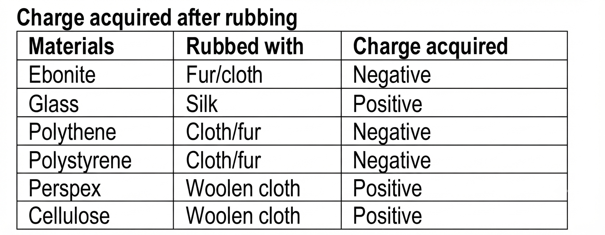
Fundamental Law of Electrostatics (Static Charges)
The law states that:
“Like charges repel, unlike charges attract each other.”
Charging
Charging is the process whereby a material loses or gains electrons.
Methods of Charging a Body
- By rubbing or friction
- By conduction or contact
- By induction
By Friction
- This is the method of charging a body by rubbing.
- For example, when an ebonite rod is rubbed with fur, some electrons are transferred from the fur to the ebonite. Therefore, the ebonite becomes negatively charged while the fur becomes positively charged.
- When a glass rod is rubbed with silk, electrons will be transferred from the glass rod to silk; the glass rod will be positively charged while the silk will be negatively charged.
By Contact
- This is the method of charging a body by touching two conductors together.
- Let us say plate X is positively charged while plate Y is neutral. Both plates are placed on insulating blocks as shown below:
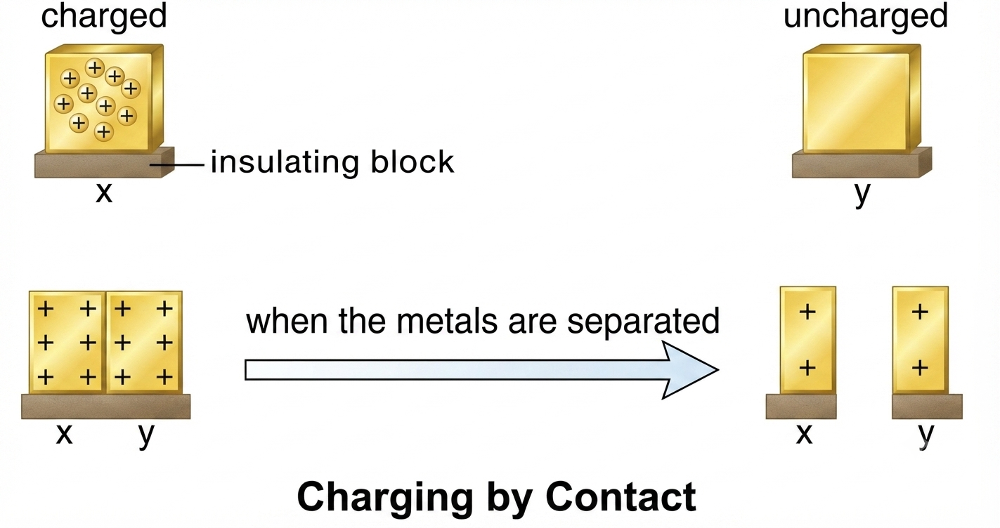
- If the two plates are brought together, plate X draws electrons from plate Y, causing plate Y to become positively charged.
By Induction
- This is the method whereby a charged object is brought near, but not touching, a neutral conducting object.
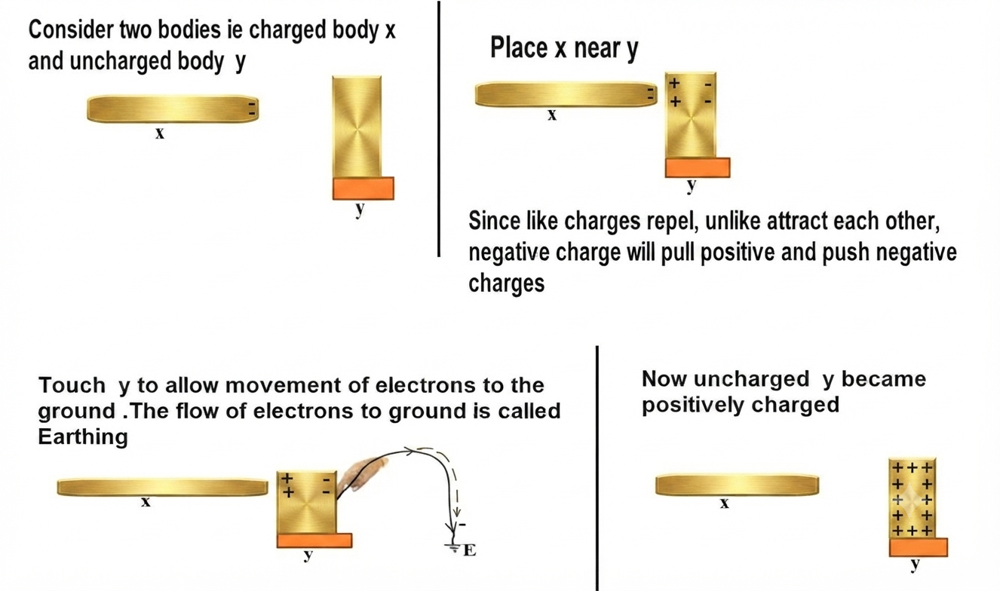
- Consider two bodies: a charged body X and an uncharged body Y.
- Place X near Y. Since like charges repel and unlike charges attract, the charged object induces opposite charges on the near side of Y and similar charges on the far side.
- Touch Y to allow movement of electrons to the ground. The flow of electrons to the ground is called Earthing.
- Remove the earth connection and then remove X; the uncharged body Y becomes charged.
Gold Leaf Electroscope
- A Gold leaf electroscope is an instrument used for detecting the presence and sign of an electrical charge on an object.
- It consists of a gold leaf and a brass rod held by insulating materials inside a glass case.
- The brass cap, brass rod, and gold leaf form the conducting part of the electroscope.
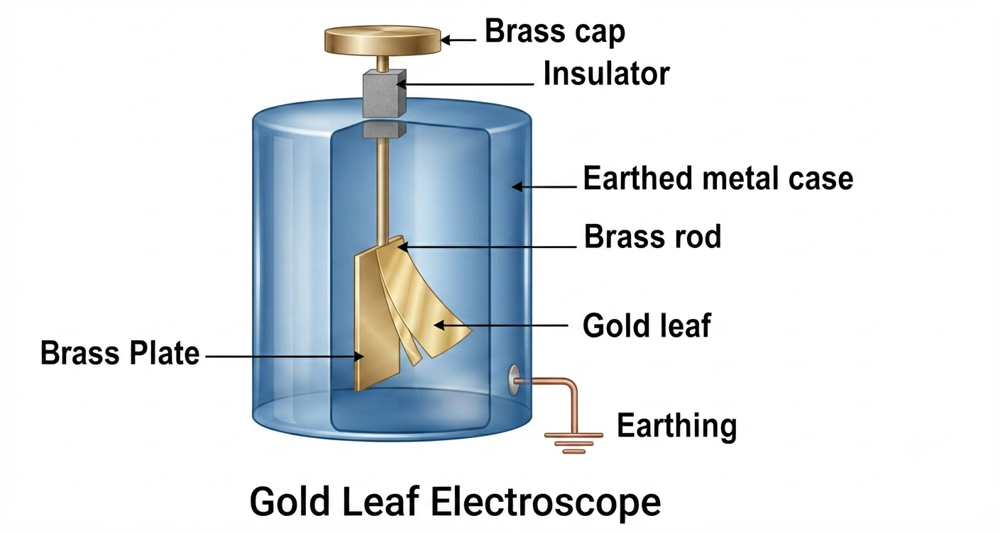
Charging a Gold Leaf Electroscope
- It can be charged by contact or induction using a charged rod or electrophorus.
Discharging a Gold-Leaf Electroscope
- It can be discharged effectively by touching the cap with a conductor connected to the earth.
Uses of Gold Leaf Electroscope
- To test the sign of charge on a charged body.
- Identifying the insulating or conducting properties of materials.
- Detecting the presence of charges on a body.
- Estimating the quantity of charge on a material.
- An electrophorus is a device used to produce continuous electrostatic charges through electrostatic induction.
- It consists of a metal disc made of brass fitted with an insulating handle resting on a polythene or rubber base.
- It can produce numerous positive charges from a single negative charge.
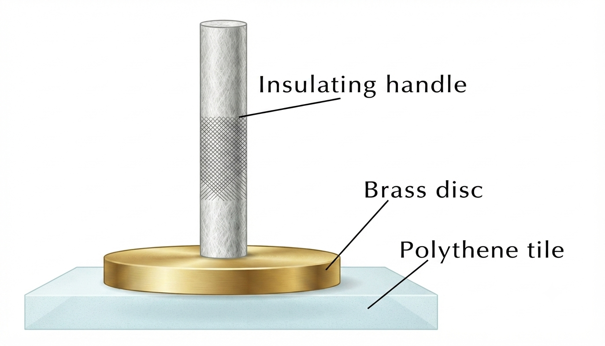
Charging an Electrophorus
- The polythene base is given a negative charge by rubbing it with fur. Placing the brass plate on top induces a positive charge on its lower surface and a negative charge on its upper surface. Touching the upper surface earths the negative charges, leaving the electrophorus with a net positive charge.
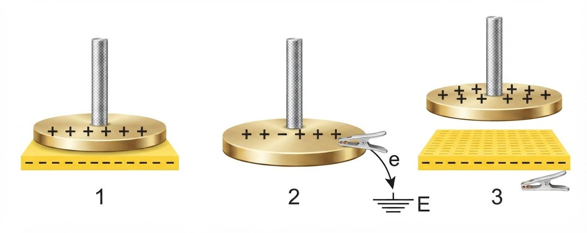
Conductors
- A conductor is a material that allows electric charges to flow through it easily.
- Examples of conductors include metals such as iron, copper, aluminum, and silver.
Insulators
- An insulator is a material that does not allow electric charges to flow through it easily.
- Examples of insulators include plastic, wood, rubber, mica, ebonite, and glass.
- A capacitor is a device used to store electric charges and energy.
- The ability of a capacitor to store electric charges is known as capacitance.
- The SI unit of capacitance is the Farad (F).
- A Farad is the capacitance of a capacitor in which a charge of one coulomb produces a potential difference of one volt across its plates.
- Capacitors are widely used in electronic circuits such as radios, televisions, and alarm systems.
- The potential difference, \(V\), across the plates is directly proportional to the charge, \(Q\), accumulating on them: \(Q \propto V\).
- Introducing the capacitance constant \(C\):
$$Q = CV$$
Charging a Capacitor
- A parallel plate capacitor consists of two metal plates (plate A and plate B) separated by a dielectric material. The plates accumulate opposite charges when connected across a potential difference.
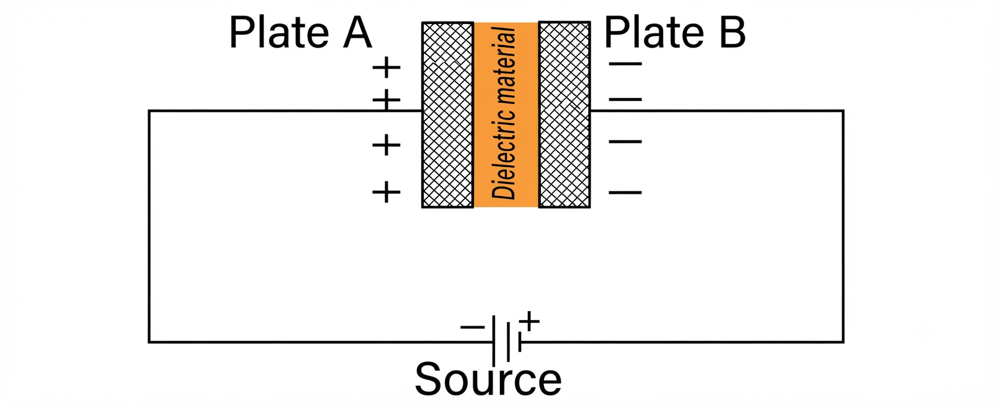
Important Terms:
- Dielectric Material: An electrical insulator that can be polarized by an applied electric field.
- Polarization: The process of separating negative and positive charges in a material.
- Potential Difference (p.d.): Work done in moving a unit positive charge from one point to another. Its SI unit is the Volt (\(\text{V}\)).
- Earth Potential: The electrical potential of the Earth is taken as zero.
Discharging a Capacitor
- When the two plates of a charged capacitor are connected by a wire, electrons flow from the negative plate to neutralize positive charges on the positive plate.
- This momentary movement of electrons produces a brief pulse of current (and potentially a small spark).
- When charge flow stops, the capacitor is fully discharged.
Types of Capacitors
Capacitors are classified according to their dielectric material:
- Paper (plastic film) capacitor
- Oil-filled capacitor
- Electrolytic capacitor
- Mica capacitor
- Variable (air-filled) capacitor
Arrangement of Capacitors
(a) Capacitors in Series Connection
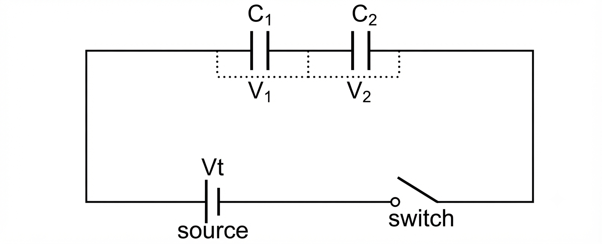
In a series circuit, total potential difference is split across the capacitors: \(V_T = V_1 + V_2\).
Since \(V = \frac{Q}{C}\) and charge \(Q\) is identical across all series capacitors (\(Q_T = Q_1 = Q_2 = Q\)):
$$\frac{Q}{C_T} = \frac{Q}{C_1} + \frac{Q}{C_2}$$
Dividing through by \(Q\) gives the effective capacitance formula:
$$\frac{1}{C_T} = \frac{1}{C_1} + \frac{1}{C_2}$$
For two capacitors in series, this simplifies to:
$$C_T = \frac{C_1 \times C_2}{C_1 + C_2}$$
(b) Capacitors in Parallel Connection
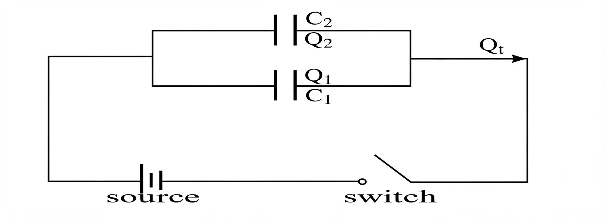
In parallel, the total charge is the sum of charges stored on each capacitor: \(Q_T = Q_1 + Q_2\).
Since \(Q = CV\):
$$C_T V_T = C_1 V_1 + C_2 V_2$$
Since potential difference across parallel branches is equal (\(V_T = V_1 = V_2 = V\)):
$$C_T V = V(C_1 + C_2) \implies C_T = C_1 + C_2$$
Individual Work – 1
- Two capacitors of \(20\ \mu\text{F}\) and \(25\ \mu\text{F}\) are connected in (i) series and (ii) parallel. What is the effective capacitance for each case?
ANS: (i) \(11.11\ \mu\text{F}\), (ii) \(45\ \mu\text{F}\)
- Determine the effective capacitance obtained when two capacitors each of \(10\ \mu\text{F}\) are connected first in parallel and then in series.
ANS: (i) \(20\ \mu\text{F}\) (parallel), (ii) \(5\ \mu\text{F}\) (series)
- To obtain an effective capacitance of \(3\ \mu\text{F}\) using a \(12\ \mu\text{F}\) capacitor and a second capacitor, calculate the required value and state how it should be connected.
ANS: Connected in series; Value = \(4\ \mu\text{F}\)
Factors Affecting Capacitance of a Parallel Plate Capacitor
- Area of the plates (\(A\)): Capacitance is directly proportional to plate area (\(C \propto A\)).
- Distance between the plates (\(d\)): Capacitance is inversely proportional to plate separation (\(C \propto \frac{1}{d}\)).
- Dielectric material (\(\varepsilon\)): Using a dielectric material like glass, mica, or polythene instead of air increases capacitance.
$$C = \frac{\varepsilon A}{d}$$
where \(\varepsilon\) is the permittivity of the dielectric medium.
- Conductors can be spherical, pear-shaped, or cylindrical. Charge distribution behavior shows:
- Hollow conductors carry charge exclusively on their outer surface.
- Inside the solid body of a hollow conductor, net electrostatic charge is zero.
- Charges concentrate heavily at sharp points or regions of high curvature where the local electric field strength is highest.
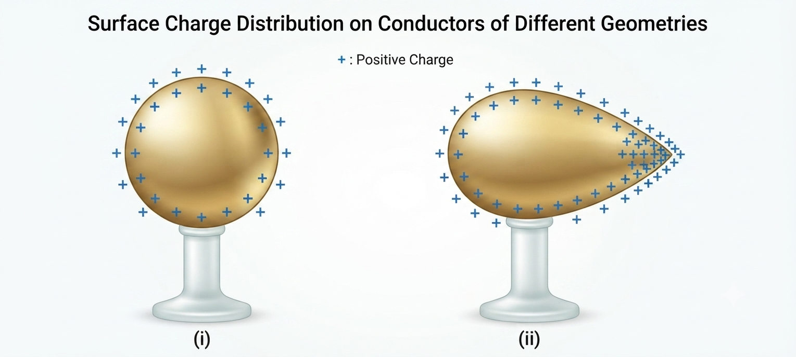
Lightning
- Lightning is a massive natural electrostatic discharge taking place between two clouds or between a cloud and the ground.
How Lightning Happens
- Friction between air currents and water drops in clouds leaves cloud bases negatively charged and upper sections positively charged. The negative charge base induces a high positive charge on the ground below.
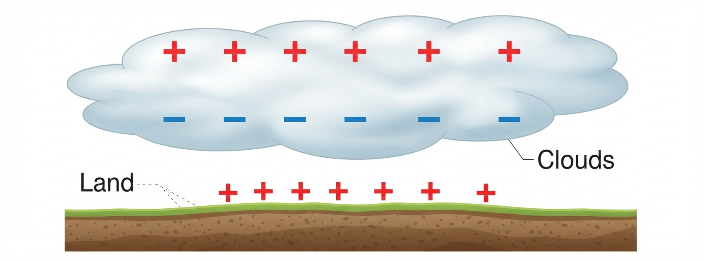
Why Lightning Strikes in a Zig-Zag Pattern
- Lightning follows the path of least electrical resistance through ionized atmospheric air pockets, creating an irregular zig-zag channel.
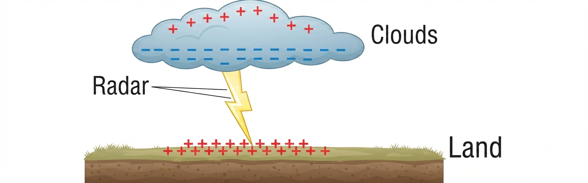
Thunderstorm
- Extreme heat along the lightning path causes rapid expansion and subsequent collapse of air channels, creating shock waves heard as thunder.
Lightning Conductor
- A protective metal rod mounted atop structures connected to a thick copper tape leading to an earth plate buried deep underground.
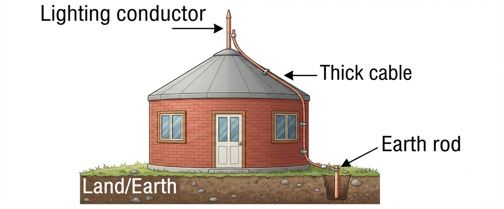
Mode of Action
- Pointed spikes at the top create an intense electric field that leaks ions into the air to neutralize cloud charges (action of points). If a strike occurs, it offers a zero-resistance path safely discharging current directly into the ground.
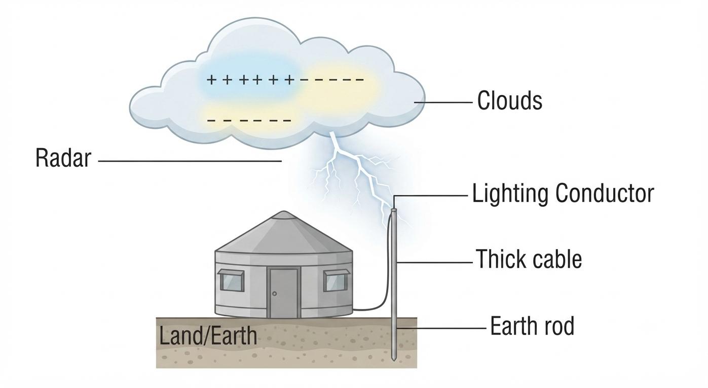
Earthing (Grounding)
- The process of connecting charged electrical systems or conductors directly to the earth to safely drain away unwanted charges.
Applications of Static Electricity
- Electrostatic Paint Spraying: Positively charged paint droplets spread evenly onto negatively charged vehicle bodies.
- Photocopying: Electrostatic charges attract toner powder to high-contrast document images on a drum.
- Inkjet Printing: Charged plates deflect micro-droplets of ink precisely onto paper.
- Electrostatic Precipitators: Drains industrial smoke particles inside chimneys to minimize pollution.
Dangers of Electrostatics
- Fuel friction inside delivery pipes creates static charges; static sparks can ignite volatile fuel vapors. Conductive bonding and metal fuel containers dissipate these risks.
Class Activity
- State what happens in each of the following scenarios:
- An ebonite rod is rubbed with fur.
- A negatively charged electroscope's cap is touched by a neutral glass rod.
- A proof plane is inserted into a hollow charged sphere and tested for charge.
- A glass rod rubbed with ____________ becomes positively charged.
- Draw a clear, well-labeled diagram of a Gold-Leaf Electroscope.
- Define the terms Capacitor and Capacitance.
- A sharp needle is brought close to the cap of a charged gold-leaf electroscope. Explain why the leaf collapses.
- Explain why you sometimes experience a mild electric shock when touching a metal doorknob after walking across a carpeted room.
- List three types of capacitors and state one application for each.
- State three factors that affect the capacitance of a parallel plate capacitor.
- A magnet is a substance which attracts metals or magnetic materials.
- Magnetism is the behavior shown by a magnet, the behavior of attracting metals (magnetic materials).
- Magnetic dipoles: Are the two poles on a magnet which are equal and opposite to each other.
- Magnetic poles: Are ends of a magnet which show the strongest attraction or repulsion power compared to the other parts of the magnet (i.e. North seeking pole N and South seeking pole S).
- Whereby N is the north seeking pole while S is the south seeking pole.
- Magnetic domains are minute regions in ferromagnetic materials with millions of atomic dipoles coupled together in a preferred direction.
NB: The strength of a magnet cannot be increased beyond a certain limit because when all magnetic domains have oriented in the same direction, no further magnetization is possible and the material is said to be saturated.
Magnetic and Non-Magnetic Materials
- Magnetic materials are all materials that can be magnetized or attracted by a magnet. E.g. iron, steel, nickel, and cobalt.
- Non-magnetic materials are all materials that cannot be magnetized or attracted by a magnet. E.g. brass, copper, tin, zinc, carbon, aluminium, wood, plastic, clothes, etc.
Properties of Magnets
- Magnets attract magnetic materials.
- Magnet possesses two poles: northern pole (N) and southern pole (S).
- The magnetic force is strongest near the poles of a magnet.
- Like magnetic poles repel but unlike magnetic poles attract.
- The magnetic force is an action-at-a-distance force.
- If a magnet is suspended freely, it always points in the north-south direction.
Types of Magnets
- Temporary magnets
- Permanent magnets
- Electromagnets
1. Temporary Magnet
- Occurs when magnetic material is magnetized in an external magnetic field but loses its magnetism when the field is removed.
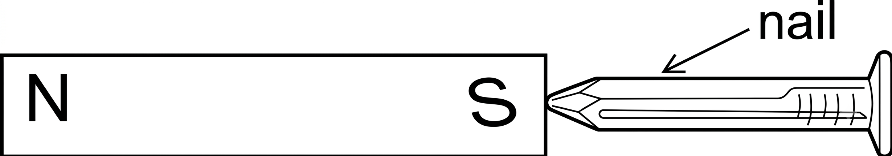
2. Permanent Magnet
- Is a magnet that holds magnetic properties over a long period of time.
- It is made from hard material such as steel.
3. Electromagnet
- Is a magnet formed when direct current (DC) electric current is allowed to flow through a wire coil wrapped round a metal core.
Shapes of Magnets
Magnets come in different shapes, including:
- A bar magnet
- A horse-shoe magnet
- Disc magnet
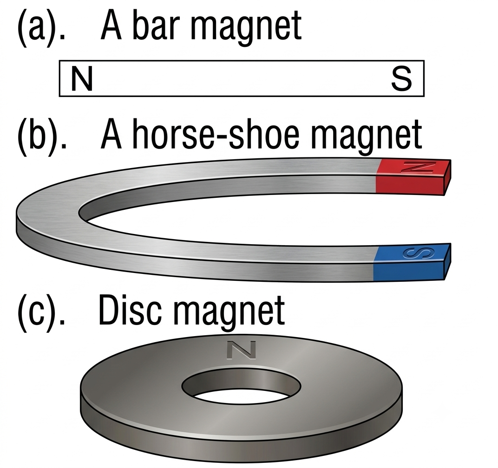
Sizes of Magnets
Magnet also varies in size, including:
- Tiny discs used in speakers
- Giant magnets used in power generating plants
- Largest magnet is perhaps the earth itself
Application of Magnets
Magnets are used in:
-
Magnetic recording media:
- VHS tapes, audio cassettes, floppy and hard discs for recording data on a thin magnetic coating.
- Common television and computer monitors
-
Transformers:
- Are used in power transmission and many electronic devices.
-
Credit, Debit and ATM cards:
- It uses magnetic ink to store information to contact an individual's financial institution and connect with their account.
-
Speakers and microphones:
- They use permanent magnets and current-carrying coils to convert electric energy into sound energy.
- Electric generator: It uses permanent magnets to convert mechanical energy to electrical energy.
- Electromagnets used in hospitals or steel works
Magnetization
Is the process of making a magnet, OR is the process of aligning the domains of atoms in material in one direction so as to produce a net effect of attraction or repulsion.
NB:
- Magnetic dipoles arrange themselves in groups called “Magnetic Domains”.
- Materials which are possible to cause this alignment or can be magnetized are either ferromagnetic or paramagnetic.
Ferromagnetic Material
- Is the material which can form permanent magnets.
- E.g. steel, nickel and cobalt.
Paramagnetic Material
- Is the material which can be temporarily magnetized.
- E.g. aluminium and chromium.
Methods Used to Magnetize Materials
- By heating and hammering method
- By stroking method
- By electric (solenoid) method
- By induction
1. Heating or Vibration Method
- When magnetic material is heated in presence of external magnetic field, the dipoles of magnetic material align, whereby in the presence of external magnetic field the atoms of magnetic materials start to move and eventually become aligned. Many natural magnetic materials start out as part of lava.
2. Stroking Method
- The pole of a bar magnet is dragged along the bar from one end to the other, then the material becomes magnetized.
3. Electric (Solenoid) Method
- When soft iron core is wound with turns of wire and current passed through it, it produces a magnetic field. This is an industrial way of making a magnet.
- This magnet that acts like a bar magnet is called a Solenoid.
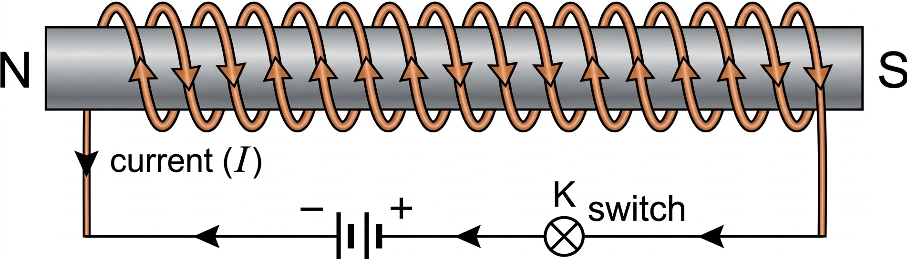
4. By Induction Method
This is a method of magnetizing an object by placing it in an external magnetic field.
NB: Magnetic induction is the process by which a piece of magnetic material becomes a magnet when it is near or touching a permanent magnet.
Demagnetization
- Is the process of removing magnetism from a given substance or material, OR is the process of disturbing the domains of an atom in a magnetized material.
Methods Used to Demagnetize a Magnet
1. Heating Method
- If a magnet is placed in the East – West direction and heated to a temperature above its Curie temperature, then the magnet loses its magnetism.
- This is because the increase in temperature results in greater atomic vibration which consequently prevents the domains from being aligned in the same direction.
2. Hammering
- The magnet is placed in an East – West direction and then repeatedly hit or stroked with a hammer jarring the domains.
3. Electrical Method
- A magnet is placed in an alternating magnetic field and then drawn slowly from the circuit and then the magnetic field is slowly decreased to zero. This principle is used in commercial demagnetizers to erase credit cards, hard disks etc. (The solenoid must be set in an East – West direction).
Storage of Magnets
In order to maintain the magnetism in magnets for a long period of time, the following practices have to be observed:
- Store away from ferrous materials.
- Store magnets in pairs and using magnetic keepers to store them.
- Store away from heat.
- Store away from strong electric and magnetic fields.
- Store away from strong vibration or mechanical impacts which may make them brittle.
Is a space around a magnet where a magnetic force is experienced (felt), OR is the region around a magnet in which magnetic materials are attracted by the magnet.
A magnetic field is represented by lines of action of magnetic force called “field lines”. Field lines show the direction of the magnetic force, hence are illustrated using arrows below.
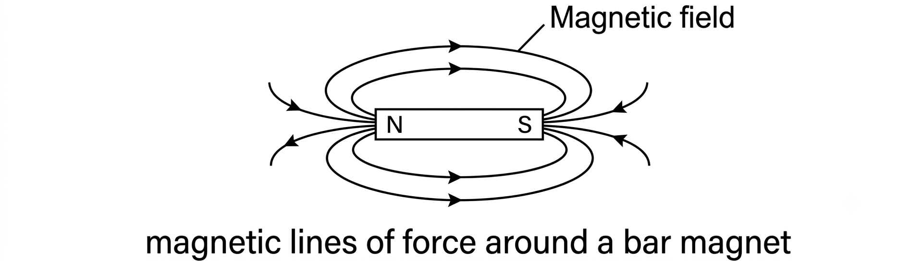
Magnetic Lines of Force (Field Lines)
- Are the imaginary lines that cojoin the poles of a magnet indicating its magnetic field.
- The lines of force point away from the North Pole of a magnet and towards the South Pole.
Properties of Magnetic Lines of Force
- Lines of force are continuous and will always form closed loops starting at North Pole and ending at the South Pole.
- Magnetic force is stronger where the lines are close together and weaker where they are far apart.
- Lines of force will never cross one another.
- Magnetic lines of force pass through all materials (magnetic and non-magnetic).
- Parallel magnetic lines of force travelling in the same direction repel each other while lines of force travelling in opposite directions attract each other.
- Magnetic lines of force always enter or leave a magnetic material at right angles (\(90^\circ\)) to the surface.
NB: A point where the net magnetic field is zero is called a neutral point.
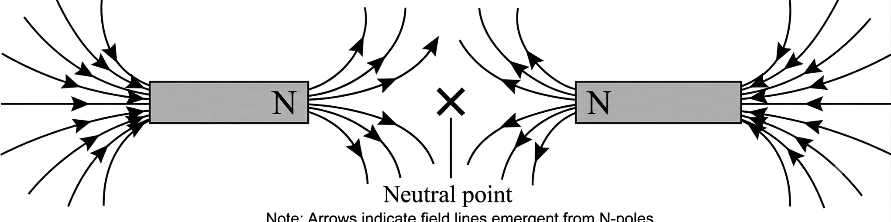
Magnetic Shielding
- Is the process of limiting the flow of magnetic fields between two locations by separating them with a barrier made of conductive material, OR is the process of limiting the penetration of magnetic fields into a region by redirecting the magnetic field lines through a material with a higher ability to be magnetized.
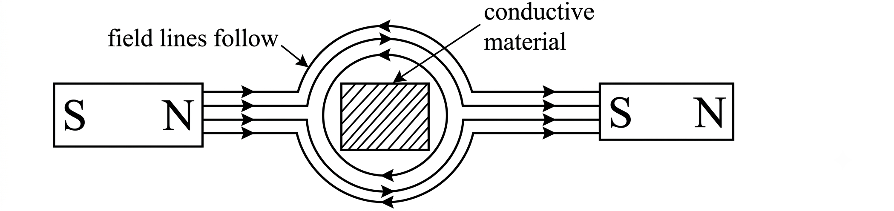
Earth's Magnetism
Earth's Magnetism is the behavior of the earth to act as a magnet.
Causes of Earth's Magnetism
The earth's magnetism is caused by the induced currents in it due to rotation on its own axis.
Earth behaves as if it has a short bar magnet inside it. It is inclined at a small angle to its axis of rotation, with its South Pole pointing to the northern hemisphere. This is inferred from the fact that the compass points towards the true north only at certain places.
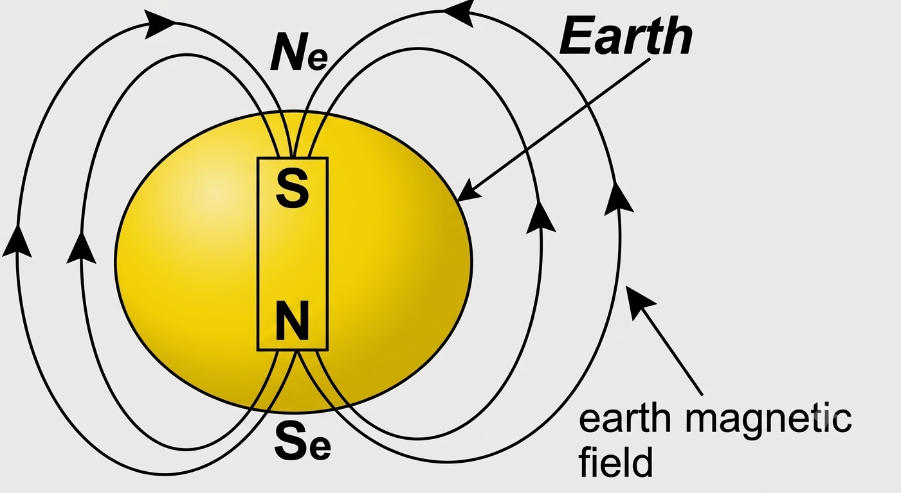
Whereby:
\(\text{Ne}\) = North hemisphere
\(\text{Se}\) = South hemisphere
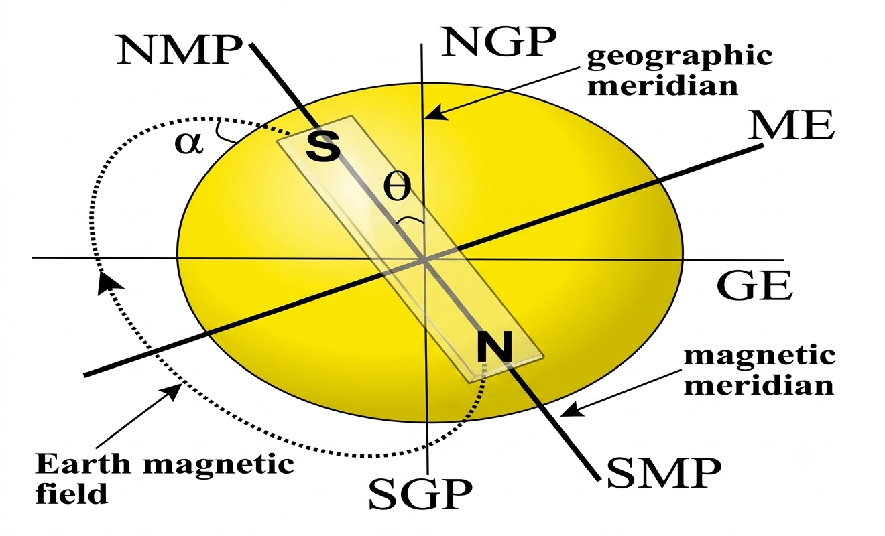
Whereby:
\(\text{GE}\) = Geographic equator
\(\text{ME}\) = Magnetic Equator
\(\Theta\) = Angle of declination
\(\text{SMP}\) = South magnetic pole
\(\text{NMP}\) = North magnetic pole
\(\text{NGP}\) = North geographic pole
\(\text{SGP}\) = South geographic pole
\(\alpha\) = Angle of dip or angle of inclination
Geographic Equator
- Is the imaginary line which divides the earth into Northern and Southern hemispheres.
Magnetic Equator
- Is an imaginary line parallel to the equator where a magnetic needle has no dip.
Magnetic Meridian
- Is the imaginary line joining the earth magnetic North Pole and South Pole.
Geographic Meridian
- Is the imaginary line joining the earth North Pole and South Pole.
South Magnetic Pole (SMP)
- Is the pole near the geographic south pole of magnet.
North Magnetic Pole (NMP)
- Is the pole near the geographic north pole of magnet.
Angle of Declination (\(\Theta\))
- Is the angle formed between the magnetic meridian and geographic meridian.
Angle of Dip or Angle of Inclination (\(\alpha\))
- Is the angle between the earth surface and the earth's magnetic field.
NB:
- The angle of dip and declination both vary from place to place.
- The angle of inclination is measured by using a Dip needle.
- The angle of dip at the magnetic poles of the earth is \(90^\circ\) while at the equator it is \(0^\circ\).
How to Locate the Position of the North Pole of a Bar Magnet
- If a bar magnet is suspended so that it rotates freely, one pole of the magnet will always turn toward the north, with the opposite pole facing south.
- The pole of the magnet that orients northward is called the north pole (N) while the opposite pole is called south pole (S).
Application of the Earth's Magnetic Field
- Used by map-readers for finding locations of different places.
- Gives useful information in the search for minerals.
- Satellites transmit information through earth's magnetic field to the earth surface.
- The earth's external magnetic field (magnetosphere) protects the earth from harmful emissions from the sun.
- The earth's magnetic field enables the compass needle to operate.
Class Activity
- Define the term magnet.
- State three applications of a magnet.
- Differentiate forces due to magnetic force and the forces due to gravity on the earth.
- State the law of polarity and illustrate this law using large diagrams.
- What is:
- A magnetic field
- A magnetic line of force
- Draw a magnetic field around a bar magnet using magnetic lines of force.
- Why do some watches have a case of iron?
- State the applications of the earth's magnetic field.
- Match the items in list A with the corresponding ones from list B:
| List A |
List B |
| (a) Magnetic materials |
(i) Like poles attract, unlike poles repel |
| (b) Law of polarity |
(ii) Magnetic field is zero |
| (c) Magnetic shielding |
(iii) Redirects magnetic lines of force |
| (d) Neutral point |
(iv) Strong magnet |
| (e) Aluminium |
(v) Iron nail |
|
(vi) Paramagnetic |
|
(vii) Direct neutral point |
- Draw the following diagrams:
- Arrangement of domains of atoms
- Mention any three features of magnetic field lines.
- What is magnetic shielding?
- Explain how magnetic shielding is done.
- Why is magnetic shielding necessary?
- Explain how a ferromagnetic material gets magnetized.
- Briefly explain how a bar magnet can be demagnetized using the electrical method.
- Explain with illustration how one can locate the position of a north pole of a bar magnet.
Moment of a Force is the product of the force applied and the perpendicular distance from a fixed point or pivot.
OR
Moment of a force is the turning effect of the force about a point.
$$\text{Moment of force} = \text{Force} \times \text{Perpendicular distance from pivot}$$
$$M = F \times d$$
The SI unit of moment of force is the Newton meter (\(\text{N m}\)).

NB:
- The point where the object rotates after a turning force is applied is called the pivot or fulcrum.
- Moment of force is applied in different activities such as opening bottle caps, opening doors, tightening nuts, etc.
- The moment of a force depends on the following:
- Size of a force
- Perpendicular distance
Application of Turning Effect in Daily Life
- It is applied by a hand to unscrew a stopper on a bottle.
- It is applied by a spanner to unscrew a nut on a bolt.
- It is applied when turning a steering wheel of a car.
- A force is applied to a door knob and the door swings open about its hinge.
- It is applied when closing and opening water taps.
This gives some reasons as to why:
- It is easier to open a nut with a long spanner than with short spanner (this is due to the higher moment resulting from the increased perpendicular distance of the long spanner).
- It is easier to open the cap of a bottle with a bottle opener than with your fingers (this is due to the additional perpendicular distance provided by the opener).
- A knob on a door is placed as far as possible from the hinges (this is due to the added perpendicular distance from the hinges to the knob).
Example:
A line of action of a force of \(90\text{ N}\) acts at a perpendicular distance of \(2.5\text{ m}\) from a point. Find the moment of the force.
Solution:
Force applied, \(F = 90\text{ N}\)
Perpendicular distance, \(d = 2.5\text{ m}\)
$$\text{Moment } (M) = F \times d = 90\text{ N} \times 2.5\text{ m} = 225\text{ N m}$$
Individual Task – 1
- The line of action of a force \(48\text{ N}\) is at a perpendicular distance of \(1.5\text{ m}\) from the point. Find the moment of the force about the point.
(ANS: Moment of the force = \(72\text{ N m}\))
- The moment of a force about a point is \(1120\text{ N m}\). If the magnitude of a force is \(5600\text{ N}\), find the perpendicular distance between the point and the line of action of the force.
(ANS: Perpendicular distance = \(0.2\text{ m}\))
- The moment of a force is \(1000\text{ N m}\). If the line of the force is at a perpendicular distance of \(100\text{ m}\), find the magnitude of the force.
(ANS: \(F = 10\text{ N}\))
- If \(150\text{ N}\) of force is applied on a spanner of \(10\text{ cm}\) to open a nut, what is the length of a spanner when a force of \(60\text{ N}\) is applied?
(ANS: \(L = 25\text{ cm}\))
Principle of Moments
Consider the ruler below:

The Principle of Moments states that:
“When a body is in equilibrium, the sum of the anticlockwise moments about any point is equal to the sum of the clockwise moments.”
OR
“When a system is in equilibrium the sum of clockwise moments is equal to the sum of anti-clockwise moments.”
$$\text{Clockwise Moment (CM)} = \text{Anticlockwise Moment (AM)}$$
$$F_1 d_1 = F_2 d_2$$
Example:
A \(100\text{ g}\) weight is suspended \(45\text{ cm}\) from the pivot of a light rod. If a weight \(w\) suspended \(20\text{ cm}\) from the pivot balances the \(100\text{ g}\) weight, find weight \(w\).

Solution:
From the principle of moments:
$$\text{CM} = \text{AM} \implies m_1 \times g \times d_1 = m_2 \times g \times d_2$$
$$100 \times 10 \times 45 = w \times 10 \times 20$$
$$100 \times 10 \times 45 = 200w$$
$$w = 225\text{ N} \quad (m = 22.5\text{ g})$$
Individual Task – 2
- A uniform meter ruler is pivoted at its centre. A \(20\text{ g}\) mass is placed at the \(10\text{ cm}\) mark and a \(50\text{ g}\) mass at the \(40\text{ cm}\) mark. At what mark must a second \(50\text{ g}\) mass be placed for the system to be in rotational balance?
(ANS: \(d = 26\text{ cm}\) from the pivot, i.e., at the \(76\text{ cm}\) mark)
- A uniform rod with a mass \(120\text{ g}\) and a length of \(130\text{ cm}\) is suspended by a wire from a point \(80\text{ cm}\) from the rod's left end. What mass must be hung from the right end of the rod for it to be in equilibrium? What will be the tension of the wire?
(ANS: \(m = 36\text{ g}\), Tension \(T = 1.56\text{ N}\))
- David and his father are sitting at the end of a seesaw \(2\text{ m}\) from the pivot while David's mother is sitting at a distance \(d\) from the pivot. The seesaw balances as shown in the figure below. Determine \(d\).
 (ANS: David's mother is sitting \(1\text{ m}\) from the pivot)
(ANS: David's mother is sitting \(1\text{ m}\) from the pivot)
Application of Principle of Moments
- Used to unscrew a stopper on a bottle.
- Used to unscrew a nut on a bolt.
- Used to open a metal cap from a bottle of soda, etc.
- Turning a steering wheel of a car.
- When the door is opened, the force on the handle exerts a turning effect about the hinges.
- The weight of a body is due to the attraction of the earth for its particles.
- This attracting force is the weight of each individual particle. Since the body consists of many particles, the total weight is the resultant of all the parallel forces acting on the individual particles.

- For a rigid body, there is one point at which the resultant force appears to act; this point is known as the center of gravity (\(G\)) of the body.
The Center of Gravity:
- Is the point through which the resultant of the weight of all the particles of the body acts.
- OR Is the point where the force of gravity can be considered to act.
- OR Is the point on a body along which all the weight of the body is likely to act.
Difference Between Centre of Gravity and Centre of Mass
| Centre of Gravity |
Centre of Mass |
| Is the point at which the whole weight of the body is likely to act. |
Is the point at which the whole mass of the body is assumed to be concentrated. |
| Weight distribution of the body around centre of gravity is uniform. |
The mass distribution around the centre of mass is uniform. |
| It changes with the change in the force of gravity. |
It remains unchanged with the change in the gravitational field. |
Couple
A couple is a pair of equal but opposite parallel forces applied to the same body but not acting along the same line.
Characteristics of a Couple
- Comprises a pair of forces.
- The forces must be equal in magnitude.
- The forces must be parallel.
- The forces must act in opposite directions.
Moment (Torque) of a Couple
Is the product of one of the anti-parallel forces, \(F\), by the perpendicular distance between them.
Equilibrium
Equilibrium is a state achieved by a body when all the forces which act upon it are balanced.
OR Is the state of a body to balance.
NB: The force which brings a body into mechanical equilibrium is called the "Equilibrant".
Conditions for a Body to be in Equilibrium
- The net force on the object must be zero.
- The system (body) must have an acceleration of \(0\text{ m/s}^2\).
OR (also stated as):
- The sum of the forces in one direction must be equal to the sum of the forces in the opposite direction.
- The sum of clockwise moments should be equal to the sum of anticlockwise moments.
Conditions for Equilibrium Depend on Three Factors
- Magnitude
- Direction of forces
- Point of application
Factors Affecting the Stability of a Body
A stable body should have:
- Wide base
- Low centre of gravity
- Stable equilibrium
- Unstable equilibrium
- Neutral equilibrium
1. Stable Equilibrium
This occurs when a body is slightly displaced and then returns to its original position after displacement.

2. Unstable Equilibrium
It occurs when a body is slightly displaced and the body does not return to its original position after displacement.

3. Neutral Equilibrium
This occurs when a body is slightly displaced and the body does not alter the position of the center of gravity.

Application of Equilibrium
- Vehicles used in car races have tyres wide apart to increase stability.
- Cambered wheels: The wheels of a car are slightly tilted to increase stability so that when a car tilts to the side, it only skids.
- Used in designing structures like bridges, aeroplanes, furniture, machines, raceboats, ships, etc.
- Our body muscles are always in a kind of equilibrium, which enables us to walk, sit, eat, run, squat, jump, etc.
- Tall structures such as buildings and pylons have a wide base and low centre of gravity to provide stability.
- A bus or car with seated passengers and loading in the lower compartments is more stable than one with standing passengers and loads on top.
- Ships have long and wide projecting plates extending from their bases into the water to increase stability.
- Beam balance: Used for measuring masses of different objects by comparison with known masses.
- Steel yard: A machine used for weighing heavy objects utilizing the principle of moments by balancing heavy objects with lighter objects on a longer arm.
- Seesaw: A long plank balanced at the fulcrum so that an increase in weight on one side causes it to go down while the other side goes up.
Class Activity
- A spanner of length \(40\text{ cm}\) is used to tighten a bolt. A force of \(400\text{ N}\) is used. Calculate the moment of the force.
(ANS: \(160\text{ N m}\))
- Abuu has a mass of \(60\text{ kg}\) and he is sitting on a see-saw at a distance of \(2.5\text{ m}\) from the pivot. Calculate the moment due to his weight.
- A heavy uniform beam AB of weight \(500\text{ N}\) is supported at its ends. The beam carries a weight of \(3000\text{ N}\) at a distance of \(1.5\text{ m}\) from end A. If the beam is \(4\text{ m}\) long, find the thrust (tension) / reaction at A and B.
(ANS: \(1375\text{ N}\), \(2125\text{ N}\))
- Explain what is meant by stable, unstable, and neutral equilibrium. Give one example of each.
- Explain what is meant by:
- Moment of a force about a point
- Equilibrium
- Centre of gravity of a body
- Equilibrant
- A metallic rod of \(2\text{ m}\) long has a mass of \(500\text{ g}\). The rod is balanced on a wedge when a \(50\text{ g}\) solid is hung \(40\text{ cm}\) from one of its ends. The wedge is \(85\text{ cm}\) from the same end.
- Sketch a diagram of the arrangement.
- How far is the wedge from the centre of the metallic rod?
- The diagram below shows a \(150\text{ g}\) rod balanced at its centre of gravity. A \(20\text{ g}\) mass is placed \(120\text{ cm}\) from the pivoted point.
- Find the value of \(x\). (ANS: \(48\text{ cm}\))
- What upward force does the pivot exert on the rod? (ANS: \(0.7\text{ N}\))
- From the diagram below, calculate reaction M and N:
 (ANS: \(M = 40\text{ N}\), \(N = 50\text{ N}\))
(ANS: \(M = 40\text{ N}\), \(N = 50\text{ N}\))
- From the diagram below, calculate:
- Reaction A and B (ANS: \(A = 1\text{ N}\), \(B = 5\text{ N}\))
- Additional weight at C that will just tilt the beam about B? (ANS: \(C = 2\text{ N}\))

- A metre rule is pivoted at its mid-point. If two objects of weight \(1.0\text{ N}\) and \(2.0\text{ N}\) are suspended at \(30\text{ cm}\) and \(90\text{ cm}\) respectively from one end, calculate the position where an upward force of \(3.0\text{ N}\) must be applied in order for the metre rule to balance horizontally.
(ANS: \(20\text{ cm}\) from pivot or at the \(70\text{ cm}\) mark)
- A uniform wooden plank with a mass of \(75\text{ kg}\) and a length of \(5\text{ m}\) is placed on top of a brick wall so that \(1.5\text{ m}\) of the plank extends beyond the wall's edge. How far beyond the edge of the wall can a \(100\text{ kg}\) woman walk before the plank begins to rotate? (Let the plank's axis of rotation be at the wall's edge)

- A pole AB of length \(10.0\text{ m}\) and weight \(800\text{ N}\) has its centre of gravity \(4.0\text{ m}\) from the end A and lies on a horizontal ground. The end B is to be lifted by a vertical force applied at B. Calculate the least force that is required to do this.
- Does an object have to be at rest to be in a state of equilibrium? Explain your answer.
- A tree trunk of length \(44\text{ m}\) is pivoted \(12\text{ m}\) from one of its ends. It is balanced when a \(1500\text{ N}\) solid is hung \(8\text{ m}\) from the pivot. Calculate the weight of the tree trunk.
(ANS: \(W = 1200\text{ N}\))
- It is found that a uniform wooden lath \(100\text{ cm}\) long and of mass \(95\text{ g}\) can be balanced on a knife-edge when a \(5\text{ g}\) mass is hung \(10\text{ cm}\) from one end. How far is the knife-edge from the centre of the lath?
(ANS: \(2\text{ cm}\))
- State the conditions of equilibrium when a body is acted upon by a number of parallel forces. A uniform metal tube of length \(5\text{ m}\) and mass \(9\text{ kg}\) is suspended horizontally by two vertical wires attached at \(50\text{ cm}\) and \(150\text{ cm}\) respectively from the ends of the tube. Find the tension in each wire.
(ANS: \(30\text{ N}\), \(60\text{ N}\))
- A uniform rod with a mass of \(120\text{ g}\) and a length of \(130\text{ cm}\) is suspended by a wire from a point \(80\text{ cm}\) from the rod's end.

- What mass must be hung from the right end of the rod for it to be in equilibrium? What will be the tension in the wire?
(ANS: \(m = 36\text{ g}\) or \(w = 0.36\text{ N}\), \(T = 1.56\text{ N}\))
- A uniform metre rule is pivoted at the centre and balanced by four suspended forces as shown in the figure below. Calculate the force exerted at the \(60\text{ cm}\) mark.
 (ANS: \(60\text{ N}\))
(ANS: \(60\text{ N}\))
- Mention the four properties (features) of a couple.
- Two parallel and opposite forces act on the handle of a bicycle. Each of the forces has a magnitude of \(45\text{ N}\). The distance between them is \(50\text{ cm}\). What is the torque produced?
- A uniform wooden bar AB of length \(120\text{ cm}\) weighing \(1.2\text{ N}\) rests on two sharp edged supports C and D placed \(10\text{ cm}\) from its ends. A \(0.2\text{ N}\) load hangs from a loop of a string \(30\text{ cm}\) from A and a \(0.9\text{ N}\) load hangs at \(40\text{ cm}\) from B. Find the:
- Reaction at C
- Reaction at D
- A uniform metre rule of weight \(0.9\text{ N}\) is suspended horizontally by two vertical loops of thread A and B placed at \(20\text{ cm}\) and \(30\text{ cm}\) from its ends respectively. Find the distances from the centre of the rule at which a \(2\text{ N}\) weight must be suspended:
- To make loop A become slack (ANS: \(29\text{ cm}\))
- To make loop B become slack (ANS: \(43.5\text{ cm}\))
- A uniform bar AB of length \(5\text{ m}\) weighs \(60\text{ N}\). The bar is supported at a horizontal position by two vertical strings X and Y. If string X is \(0.6\text{ m}\) from A and string Y is \(1.8\text{ m}\) from B, find the tension in the string.
 (ANS: \(16.5\text{ N}\))
(ANS: \(16.5\text{ N}\))
- A uniform half metre rule is freely pivoted at the \(15\text{ cm}\) mark and it balances horizontally when a body of mass \(40\text{ g}\) is hung from the \(2\text{ cm}\) mark.
- Draw a clear force-diagram of the arrangement.
- Calculate the mass of the rule.
- Explain the following:
- Why a loaded test tube floats upright?
- It is more difficult to balance a nail on its tip than on its base.
- A bus carrying a very big load on its carrier can easily overturn.
- A metre rule of weight \(1.0\text{ N}\) is supported horizontally on two knife edges each placed \(10.0\text{ cm}\) from its ends. If the weight of \(1.5\text{ N}\) is placed at its mid-point, calculate the reaction at the supports.
- A simple weighing machine is made of a uniform bar \(125\text{ cm}\) long and mass \(5\text{ kg}\) and pivoted \(2.5\text{ cm}\) from one end. Find the mass that must be suspended at the end of the short arm.
(ANS: \(m = 4.08\text{ kg}\))
- A \(2.0\text{ N}\) weight placed on a \(10\text{ cm}\) mark of a meter rule just balances an object hanging from the \(60\text{ cm}\) mark. Calculate the weight of the object.
(ANS: \(W = 8\text{ N}\))
- How can a metre rule be balanced on a knife edge?
- Briefly explain why the handle of a door is near its outside edge?
- Two spheres of mass \(3.0\text{ kg}\) and \(2.0\text{ kg}\) are joined by a light rod so that their centers are \(0.45\text{ m}\) apart. Locate the center of gravity of the system.
- Define centre of gravity. Hence outline the main difference between the centre of gravity and centre of mass.
- List the factors that affect the stability of a body.
- Explain why racing cars should have wide wheel tracks.
- Define turning effect of force and give its SI unit.
- Why should a mechanic choose a long spanner to undo a tight nut?
- A uniform half meter rule is pivoted at its \(30\text{ cm}\) mark. A mass of \(50\text{ g}\) hung at the \(45\text{ cm}\) mark keeps the rule horizontal. Determine the mass of the half meter rule.
- Force applied by a lady is \(2\text{ N}\) and moment of force is \(16\text{ N m}\), distance of pivot from effort would be -------------.
-
- What is meant by balanced beam?
- A uniform rod AB of mass \(6.0\text{ g}\) is balanced horizontally about a knife edge at a distance of \(3\text{ cm}\) from end A where a mass of \(8.0\text{ g}\) is hanging. Find the length of the rod.
(ANS: \(L = 14\text{ cm}\))
- Moment of force applied on a door is \(15\text{ N m}\) and force applied is \(3.75\text{ N}\), distance of the handle from the pivot is ------------- .
- Door hinge is about \(1.5\text{ m}\) away from handle, and a boy applies a force of \(4\text{ N}\). What will be the moment of force applied?
- Bilqees has a weight of \(300\text{ N}\) and sits \(2.0\text{ m}\) from the pivot of see-saw. Asiah has a weight of \(450\text{ N}\) and sits \(1.5\text{ m}\) from pivot. Who will move down?
- A uniform meter rule of weight \(16\text{ N}\) is pivoted at the \(60\text{ cm}\) mark. A \(4.0\text{ N}\) weight is suspended from one end. At the instant when the rule is horizontal, what is the value of the resultant turning moment about the pivot?
- A \(2.0\text{ N}\) weight placed on the \(10\text{ cm}\) mark of a meter rule just balances an object hanging from the \(60\text{ cm}\) mark. Calculate the weight of the object.
(\(w = 8\text{ N}\))
Machine
Machine is any device by means of which a force applied at one point can be used to overcome a force at some other point.
OR
Is any device which is used to simplify work.
OR
Is any device that uses energy to perform some activity (work) by making an applied force larger.
Examples are screw driver, pulley, inclined plane, bicycle, typewriter, car, etc.
Types of Machine
- Simple machine
- Complex machine
Simple Machine
Is any device that requires the application of a single force to do work.
OR
Is a mechanical device that helps to make work easier.
Examples are Screw driver, Crowbar, See-saw, Pulleys, Inclined plane, Hydraulic systems, Levers, wheel and axle, etc.
Complex Machine
A Complex Machine is a combination of more than one simple machine.
Examples are Bicycle, Typewriter, Car, Sewing machine, etc.
Terms Used
Effort (E)
Is a force which is applied to the machine so as to lift an object.
OR
Is the force used to operate a machine.
Its SI unit is Newton (\(\text{N}\)).
Load (L)
Is the resistance which a machine overcomes.
OR
Is the object to be moved from one place to another.
Its SI unit is Newton (\(\text{N}\)).
Mechanical Advantage (MA)
Mechanical advantage is the ratio of the load to the effort.
It has no SI unit.
$$\text{Mechanical Advantage} = \frac{\text{Load}}{\text{Effort}}$$
$$\text{M.A} = \frac{L}{E}$$
Example:
A man of mass \(100\text{ kg}\) lifts a box weight \(500\text{ kg}\) by standing on one end of a lever. How much mechanical advantage did the lever provide to the man while lifting the box?
Solution:
Given: Effort, \(E = 100\text{ kg} = 1000\text{ N}\), Load, \(L = 500\text{ kg} = 5000\text{ N}\)
Mechanical advantage, \(\text{MA} = ?\)
$$\text{From: } \text{MA} = \frac{L}{E}$$
$$\text{MA} = \frac{5000}{1000} = 5$$
Velocity Ratio (VR)
- Velocity ratio is the ratio of the distance moved by the effort to the distance moved by load.
$$\text{Velocity Ratio} = \frac{\text{Effort distance}}{\text{Load distance}}$$
$$\text{V.R} = \frac{E_d}{L_d}$$
- Velocity ratio has no SI unit.
- Velocity ratio is not affected by friction.
Example:
When a machine pressed by effort moved down a distance of \(100\text{ cm}\), while the load is raised through \(25\text{ cm}\) at the same time. Find the velocity ratio.
Solution:
Given:
Distance moved by effort, \(E_d = 100\text{ cm}\)
Distance moved by load, \(L_d = 25\text{ cm}\)
Required: Velocity ratio, \(\text{VR} = ?$
$$\text{From: } \text{VR} = \frac{E_d}{L_d} = \frac{100}{25} = 4$$
Work Output (\(W_o\))
Work output is the product of load and distance moved by the load.
$$\text{Work Output} = L \times L_d$$
Work Input (\(W_i\))
Is the product of effort and distance moved by the effort.
$$\text{Work Input} = E \times E_d$$
Efficiency of a Machine
Is the ratio of the useful work derived from a machine to the energy put into it.
OR
Is the ratio of the work output to the work input.
NB: This ratio is always expressed as a percentage i.e.
$$\text{Efficiency} = \frac{\text{Work output}}{\text{Work input}} \times 100\%$$
$$\text{Efficiency} = \frac{L \times L_d}{E \times E_d} \times 100\% = \left(\frac{L}{E}\right) \times \left(\frac{L_d}{E_d}\right) \times 100\%$$
$$\text{Efficiency} = \frac{\text{M.A}}{\text{V.R}} \times 100\%$$
NB: The mechanical efficiency of a machine is always less than \(100\%\). This is because some energy is lost as heat due to friction.
A frictionless (ideal/perfect) machine would have an efficiency of \(100\%\).
Example:
A machine having a velocity ratio of \(5\) requires \(600\text{ J}\) of work to raise a load of \(400\text{ N}\) if the load moved through a distance of \(0.5\text{ m}\), calculate the mechanical advantage and efficiency of the machine.
Solution:
Given:
Velocity ratio, \(\text{VR} = 5\)
Work input, \(W_i = 600\text{ J}\)
Load, \(L = 400\text{ N}\)
Load distance, \(L_d = 0.5\text{ m}\)
Mechanical Advantage, \(\text{M.A} = ?$
Efficiency, \(e = ?$
$$\text{From: } e = \frac{W_o}{W_i} \times 100\%$$
$$\text{Since } W_o = L \times L_d = 400 \times 0.5 = 200\text{ J}$$
$$\text{Efficiency} = \frac{200}{600} \times 100\% = 33.33\%$$
$$\text{Also: } \text{Efficiency} = \frac{\text{M.A}}{\text{V.R}} \times 100\%$$
$$33.33\% = \frac{\text{M.A}}{5} \times 100\% \implies \text{M.A} = 1.67$$
Individual Task – 1
- In a certain machine a force of \(10\text{ N}\) moves down a distance of \(3\text{ cm}\) in order to raise a load of \(10\text{ N}\) through a height of \(0.5\text{ cm}\). Calculate the velocity ratio of the machine.
(ANS: 6)
- A certain machine is designed in such a way that a force of \(150\text{ N}\) is used to lift load of \(600\text{ N}\). What is the mechanical advantage?
(ANS: 4)
- An athlete exerts a force of \(100\text{ N}\) while running \(100\text{ m}\) race, if he uses \(50,000\text{ J}\) of food energy. Calculate his efficiency.
(ANS: 20%)
- A simple machine was used to raise a load of weight \(3920\text{ N}\) through a height of \(3.5\text{ m}\) by applying an effort of \(980\text{ N}\), if the distance moved by the effort was found to be \(20\text{ m}\), find:
- The mechanical advantage
(ANS: 4)
- The velocity ratio
(ANS: 5.71)
- The efficiency of the machine
(ANS: 70%)
A lever is a rigid bar (board or rod) that is supported on a single point around which it rotates.
OR
A Lever is a rigid body which when in use turns about a fixed point.
A lever has three main parts, these are Fulcrum, Load arm and Effort arm.

- The lever is used to lift heavy weights with the least effort (the longer the bar, the easier it is to lift the load).
- The fixed point is called Pivot (Fulcrum).
- Fulcrum is the fixed point about which the bar moves.
- Examples of levers are wheelbarrow, a pair of scissors, a shovel, etc.
Classes of Levers
- First class levers
- Second class levers
- Third class levers
1. First Class Levers
- In a first-class lever, the pivot is located between the effort and the load.
- Examples are crowbars, scissors, pliers, see-saws, etc.

2. Second Class Levers
- In a second-class lever, the load is located between the pivot and the effort.
- Examples are wheelbarrows, nutcrackers, bottle openers, etc.

3. Third Class Levers
- In a third-class lever, the effort is applied between the pivot and the load.
- Examples are shovel (spade), tweezers, fishing rod, tongs, etc.

Mechanical Advantage of Levers
Is the ratio of effort arm (\(E_a\)) to the load arm (\(L_a\)).
$$\text{MA} = \frac{E_a}{L_a}$$
NB:
- Effort arm (\(E_a\)) is a distance between fulcrum and effort.
- Load arm (\(L_a\)) is distance between fulcrum and load.
- MA of second class is greater than first class lever.
- MA of third class is less than first class lever.
Example:
A force of \(30\text{ N}\) is applied at one end of a crowbar and overcomes a resistance of \(150\text{ N}\) at the lid of a case. Find the mechanical advantage.
Solution:
Given: Effort, \(E = 30\text{ N}\), Load, \(L = 150\text{ N}\), Required: Mechanical Advantage, \(\text{M.A} = ?$
$$\text{From: } \text{M.A} = \frac{L}{E} = \frac{150}{30} = 5$$
Velocity Ratio of a Lever
$$\text{V.R} = \frac{E_d}{L_d}$$
Where: \(E_d = \text{Distance moved by effort}\), \(L_d = \text{Distance moved by load}\)
$$\text{Efficiency} = \frac{\text{Work output}}{\text{Work input}} \times 100\%$$
Individual Task – 2
- In a certain machine, a force of \(10\text{ N}\) moves down a distance of \(5\text{ cm}\) in order to raise a load of \(100\text{ N}\) through a height of \(0.5\text{ cm}\). Calculate the velocity ratio of the lever. (ANS: V.R = 10)
- A machine with a velocity ratio of \(6\) requires \(800\text{ J}\) of work to raise a load of \(600\text{ N}\) through a vertical distance of \(1\text{ m}\). Find the efficiency and mechanical advantage. (ANS: Eff = 75%, M.A = 4.5)
- A certain first-class lever of length \(2.5\text{ m}\) has a velocity ratio of \(12\) and an efficiency of \(85\%\). Find:
- Distance moved by effort (ANS: 30 m)
- Force/effort required for lifting a load weighing \(75\text{ N}\) (ANS: 7.4 N)
Uses of Levers in Daily Life
- Used in pairs of scissors and tongs.
- Used in wheelbarrows to carry loads.
- Spanners and wrenches used by plumbers, electricians, etc.
- Crowbars used to remove nails from pieces of wood.
- Fishing rods.
A pulley is a simple machine that consists of a wheel that rotates around an axis called an axle.
The tension in the rope is assumed to be the same at all points in an ideal pulley.
Types of Pulleys
- Single fixed pulley
- Single movable pulley
- Combination pulley
- The block and tackle pulley system
1. Single Fixed Pulley
A single fixed pulley has its axle mounted in a fixed position. A rope passes round a groove in the wheel.
It is commonly used to raise flags to the top of a flagpole and by builders to lift cement blocks.

For a Single Fixed Pulley:
- Neglecting the weight of the rope and friction of the pulley, the tension (\(T\)) in the rope is equal to the effort (\(E\)), and the load (\(L\)) equals the effort applied: \(\text{Effort } (E) = \text{Tension } (T) = \text{Load } (L)\).
- $$\text{M.A} = \frac{L}{E} = \frac{L}{L} = 1$$
- The load and effort move the same distance: \(E_d = L_d\).
- $$\text{V.R} = \frac{E_d}{L_d} = \frac{E_d}{E_d} = 1$$
2. Single Movable Pulley
It consists of one pulley which is free to move up and down with the load.

For a Single Movable Pulley:
$$\text{M.A} = \frac{L}{E}$$
The tension (\(T\)) in the string is equal to the effort applied, so the total upward pull on the pulley is twice the effort (\(2E\), where \(E = T\)). Therefore, the load \(L = 2T = 2E\).
$$\text{M.A} = \frac{L}{E} = \frac{2E}{E} = 2$$
$$\text{V.R} = \frac{\text{Distance moved by effort}}{\text{Distance moved by load}} = \frac{x}{\frac{1}{2}x} = 2$$
3. Combined Pulley System
It consists of a combination of fixed and movable pulleys.
$$\text{M.A} = \frac{L}{E}$$
$$\text{V.R} = n \quad (\text{where } n \text{ is the number of pulleys or rope segments supporting the load})$$
4. The Block and Tackle Pulley System
It is a combination pulley that consists of several fixed and movable pulleys arranged in two blocks. It is widely used in sailing ships to lift heavy sails and in garages to lift car engines.
Uses of Pulleys in Daily Life
- Applicable in winches for building works.
- Used as transport systems up mountain slopes.
- Used by fishermen to lift heavy loads or move boats.
- Used in garages to lift car engines.
- Used for fetching water in wells.
An inclined plane is a smooth flat rigid surface slanted at an angle to the horizontal. Examples of inclined planes include staircases, winding roads, and ramps.

Whereby:
- Vertical height = Load distance (\(L_d\))
- Slanted height = Effort distance (\(E_d\))
$$\text{M.A} = \frac{L}{E}, \quad \text{V.R} = \frac{E_d}{L_d}$$
$$\text{Since } \sin\theta = \frac{\text{Load distance}}{\text{Effort distance}} = \frac{L_d}{E_d} \implies \text{V.R} = \frac{1}{\sin\theta}$$
$$\text{Efficiency} = \frac{\text{M.A}}{\text{V.R}} \times 100\%$$
Example:
A force of \(600\text{ N}\) is used to move a load of \(3000\text{ N}\) up an inclined plane. Given that the slanted height and vertical height of the plane are \(18\text{ m}\) and \(3\text{ m}\) respectively. Find:
(a) Velocity ratio of the plane
(b) Mechanical advantage
(c) Efficiency of the plane
Solution:
Given: \(E = 600\text{ N}\), \(L = 3000\text{ N}\), \(E_d = 18\text{ m}\), \(L_d = 3\text{ m}\)
(a) \(\text{V.R} = \frac{E_d}{L_d} = \frac{18}{3} = 6$
(b) \(\text{M.A} = \frac{L}{E} = \frac{3000}{600} = 5$
(c) \(\text{Efficiency} = \frac{\text{M.A}}{\text{V.R}} \times 100\% = \frac{5}{6} \times 100\% = 83.3\%\)
A screw is a form of an inclined plane in which the plane is wrapped around a cylindrical rod. A screw jack consists of a threaded rod operated by a lever arm.
- The distance between two successive threads is referred to as the pitch (\(p\)).
- The mechanical advantage of a screw jack depends on its pitch and the length of the effort handle.
$$\text{Pitch} = \frac{\text{Length of the threaded rod}}{\text{Number of threads}}$$
$$\text{V.R} = \frac{\text{Circumference of the effort circle}}{\text{Pitch}} = \frac{2\pi R}{p}$$
A wheel and axle consists of a wheel and an axle mounted and joined together so they have the same axis of rotation.

Whereby:
- Circumference of axle = Load distance (\(L_d\))
- Circumference of wheel = Effort distance (\(E_d\))
- Radius of wheel = \(R\), Radius of axle = \(r\)
For a Wheel and Axle:
$$\text{M.A} = \frac{L}{E}$$
$$\text{V.R} = \frac{E_d}{L_d} = \frac{2\pi R}{2\pi r} = \frac{R}{r}$$
$$\text{Efficiency} = \frac{\text{M.A}}{\text{V.R}} \times 100\%$$
Example:
A wheel and axle has a velocity ratio of \(6\). Determine the radius of the wheel, if the radius of the axle is:
(a) \(5\text{ cm}\) (b) \(8\text{ cm}\) (c) \(12\text{ cm}\)
Solution:
Given: Velocity ratio, \(\text{VR} = 6\), Radius of the wheel, \(R = ?$
$$\text{Since } \text{V.R} = \frac{R}{r} \implies R = \text{V.R} \times r$$
(a) If radius of axle, \(r = 5\text{ cm}\):
$$R = 6 \times 5 = 30\text{ cm}$$
(b) If radius of axle, \(r = 8\text{ cm}\):
$$R = 6 \times 8 = 48\text{ cm}$$
(c) If radius of axle, \(r = 12\text{ cm}\):
$$R = 6 \times 12 = 72\text{ cm}$$
A wheel and axle with an efficiency of \(90\%\) is used to raise a load of \(10000\text{ N}\). The radius of the wheel is \(40\text{ cm}\) while the radius of the axle is \(5\text{ cm}\). Find Velocity ratio, Mechanical advantage and Effort.
(ANS: V.R = 8, M.A = 7.2, E = 1388.9 N)
Uses of Wheel and Axle in Daily Life
- Applied in riding a bicycle (crank and sprocket system).
- Used to fetch water in a well (windlass).
A hydraulic press multiplies an applied effort using the pressure of a liquid or gas. This allows the lifting of a heavy load by applying a small effort.

Assume there is no frictional force:
By the principle of transmission of pressure in liquids, the pressure on the effort piston equals that on the load piston.
$$P_1 = P_2, \quad \text{Since } P = \frac{F}{A}$$
$$\text{Whereby: } F_1 = E = P_1 A_1, \quad F_2 = L = P_2 A_2$$
$$\text{Since } \text{M.A} = \frac{L}{E} \implies \text{M.A} = \frac{A_2}{A_1}$$
$$\text{Whereby: } A_2 = \pi R^2 \quad \text{and} \quad A_1 = \pi r^2$$
$$\text{M.A} = \frac{R^2}{r^2}$$
In practical cases, the mechanical advantage is less than \(\frac{R^2}{r^2}\) due to frictional forces in the hydraulic press. Therefore, the efficiency of a hydraulic press is less than \(100\%\).
Velocity Ratio of a Hydraulic Press
Assuming that the hydraulic press is frictionless, then:
$$\text{Work output} = \text{Work input}$$
$$L \times L_d = E \times E_d$$
$$\frac{L}{E} = \frac{E_d}{L_d}$$
$$\text{But } \text{M.A} = \frac{L}{E} = \frac{R^2}{r^2}$$
$$\therefore \text{V.R} = \text{M.A} = \frac{R^2}{r^2} \quad (\text{If the hydraulic press is } 100\% \text{ efficient})$$
Example:
The diagram below shows a hydraulic press being used to lift a container weighting \(100000\text{ N}\).
Radii of the effort and load pistons are \(20\text{ cm}\) and \(5\text{ m}\) respectively. If the efficiency of the hydraulic press is \(90\%\), determine:
(a) Velocity ratio
(b) Mechanical advantage
(c) Minimum Effort
(d) The distance the container is raised through if the effort piston is pushed through \(1\text{ m}\)
Solution:
Given: \(L = 100000\text{ N}\), Radius of Load piston \(R = 5\text{ m}\), Radius of effort piston \(r = 20\text{ cm} = 0.2\text{ m}\), \(\text{Efficiency} = 90\%\)
(a) \(\text{V.R} = \frac{R^2}{r^2} = \frac{5^2}{0.2^2} = \frac{25}{0.04} = 625\)
(b) \(\text{Efficiency} = \frac{\text{M.A}}{\text{V.R}} \times 100\% \implies \text{M.A} = \frac{90 \times 625}{100} = 562.5\)
(c) \(\text{From: } \text{M.A} = \frac{L}{E} \implies E = \frac{L}{\text{M.A}} = \frac{100000}{562.5} = 117.78\text{ N}\)
(d) \(\text{V.R} = \frac{E_d}{L_d} \implies L_d = \frac{E_d}{\text{V.R}} = \frac{1}{625} = 0.0016\text{ m}\)
Uses of Hydraulic Press in Daily Life
- It lifts heavy loads.
- Used in ginneries to compress a lump of cotton into small bales.
- Used in industries to form car bodies into required shapes.
- Determine the effort required to lift a load of \(100\text{ N}\) using:
- A single fixed pulley
- A single movable pulley
- Combination pulley system made up of 5 pulleys
- Compare your results, which is the best pulley to use in this case? Why is it the best?
- A machine has a velocity ratio of \(5\) and is \(80\%\) efficient. What effort would be needed to lift a load of \(200\text{ N}\) with the aid of this machine?
- While lifting a load of \(200\text{ N}\) using a lever, an effort of \(80\text{ N}\) moved through a distance of \(20\text{ cm}\) to lift the load through a distance of \(4\text{ cm}\). Calculate:
- The mechanical advantage
- The velocity ratio
- The efficiency of the machine
- A block and tackle system consisting of \(5\) pulleys is used to raise a load of \(400\text{ N}\) through a height of \(10\text{ cm}\). If the work done against friction is \(100\text{ J}\), calculate:
- The work done by the effort
- The efficiency of the machine
- The effort applied
- If an effort of \(15\text{ N}\) is needed to lift a load of \(150\text{ N}\) with a three-pulley system, what is the efficiency of this machine?
-
- In a pulley system, a load of \(700\text{ N}\) requires an effort of \(100\text{ N}\) to raise it. What is the mechanical advantage?
- If this effort moves through a distance of \(10\text{ m}\) and the load is then moved up a distance of \(2\text{ m}\), calculate the velocity ratio and the efficiency of the machine.
- A machine requires \(6000\text{ J}\) of energy to lift a mass of \(55\text{ kg}\) through a vertical distance of \(8\text{ m}\). Calculate its efficiency. \((g = 10\text{ N/kg})\)
- A pulley system has a velocity ratio of \(3\). Calculate the effort required to lift a load of \(600\text{ N}\), if the system is \(75\%\) efficient.
- A machine of efficiency \(75\%\) lifts a mass of \(90\text{ kg}\) through a vertical distance of \(3\text{ m}\). Find the work required to operate the machine.
- A hydraulic machine has a piston P of cross-sectional area \(5\text{ cm}^2\) and Q of cross-sectional area \(50\text{ cm}^2\). Find the velocity ratio of the system.
- If the VR of a hydraulic machine is \(441\) and the effort distance moved by the effort piston is \(7\text{ m}\), calculate the load distance.
- A load of \(30\text{ N}\) is raised \(2\text{ m}\) when an effort of \(10\text{ N}\) moves through \(8\text{ m}\). Calculate the mechanical advantage and velocity ratio of the machine.
- A \(120\text{ N}\) load is pushed up a straight smooth inclined plane. The angle between the inclined plane and the horizontal is \(30^\circ\). The load is moved a distance of \(5\text{ m}\) along the inclined plane. Calculate:
- The vertical height the load is moved
- The velocity ratio of the inclined plane
- If the machine has an efficiency of \(75\%\), calculate the effort force required
- The frictional force in a car jack is great. Explain why this must be so.
- What do you understand by the efficiency of a machine? A system of levers with a velocity ratio of \(25\) overcomes a resistance of \(3300\text{ N}\) when an effort of \(165\text{ N}\) is applied to it, calculate:
- Mechanical advantage of the system (ANS: 20)
- Its efficiency (ANS: 80%)
- Define work and power. Name and define the SI unit of power. By using a block and tackle a man can raise a load of \(720\text{ N}\) by an effort of \(200\text{ N}\). Find:
- The mechanical advantage of the method (ANS: 3.6)
- The man's useful power output if he raises the load through \(10\text{ m}\) in \(90\text{ s}\) (ANS: 80 W)
- Draw a diagram of a single-string pulley system with a velocity ratio of \(4\).
- A father exerting a force of \(300\text{ N}\) was able to push a wheelbarrow with a load of mass \(120\text{ kg}\). Calculate the number of times the wheelbarrow multiplied the father's force \((g = 9.8\text{ N/kg})\). (ANS: M.A = 3.92)
- A machine, the load moves \(2\text{ m}\) when the effort moves \(8\text{ m}\). If an effort of \(20\text{ N}\) is used to raise a load of \(60\text{ N}\), what is the efficiency of the machine? (ANS: Efficiency 75%)
- A block and tackle system has \(3\) pulleys in the upper fixed block and two in the lower movable block. What load can be lifted by an effort of \(200\text{ N}\) if the efficiency of the machine is \(60\%\)? (ANS: L = 600 N)
- A wheel and axle is used to raise a load of \(280\text{ N}\) by a force of \(40\text{ N}\) applied to the rim of the wheel. If the radii of the wheel and axle are \(70\text{ cm}\) and \(5\text{ cm}\) respectively, calculate the M.A, V.R and efficiency. (ANS: M.A = 7, V.R = 14, Efficiency = 50%)
- A man uses an inclined plane to lift a \(50\text{ kg}\) load through a vertical height of \(4.0\text{ m}\). The inclined plane makes an angle of \(30^\circ\) with the horizontal. If the efficiency of the inclined plane is \(72\%\), calculate:
- The effort needed to move the load up the inclined plane at a constant velocity. (ANS: Effort = 347.2 N)
- The work done against friction in raising the load through the height of \(4.0\text{ m}\) \((g = 10\text{ N/kg})\). (ANS: Wd = 777.6 J)
- A car weighing \(1600\text{ kg}\) is lifted with a jack-screw of \(11\text{ mm}\) pitch. If the handle is \(28\text{ cm}\) from the screw, find the force applied. (ANS: E = 10 N)
- In the figure below, a crowbar was used to lift a \(600\text{ N}\) load placed \(1.2\text{ m}\) away from the turning point. An effort was exerted at a distance of \(3\text{ m}\) from the turning point.
- Calculate the value of the velocity ratio. (ANS: V.R = 0.4)
- Assume the machine was frictionless and weightless, find the value of the load. (ANS: L = 240 N)
- A machine used to lift a load to the top of a building under construction has a velocity ratio of \(6\). Calculate its efficiency if an effort of \(1200\text{ N}\) is required to raise a load of \(6000\text{ N}\). Find the energy wasted when a load of \(700\text{ N}\) is lifted through a distance of \(3\text{ m}\).
- In order to lift a car of weight \(5000\text{ N}\) through a vertical height of \(200\text{ m}\), a \(700\text{ m}\) long inclined plane is used. Calculate:
- Velocity ratio of the simple machine (ANS: 3.5)
- The effort applied (ANS: 1428.57 N)
- The mechanical advantage of the simple machine (ANS: 3.5)
- A Crate of soda of mass \(15\text{ kg}\) was raised through a certain vertical height of a plane inclined at \(30^\circ\) with the horizontal. Assume that the plane is frictionless and \(g = 10\text{ N/kg}\). Determine:
- Velocity ratio of the simple machine (ANS: V.R = 2)
- The effort applied (ANS: E = 75 N)
- The mechanical advantage of the simple machine (ANS: M.A = 2)
- In a hydraulic press, the small piston has an area of \(0.2\text{ m}^2\) while the large piston has an area of \(1.5\text{ m}^2\). The effort applied on the small piston is \(250\text{ N}\). Calculate:
- The mechanical advantage of the machine (ANS: 7.5)
- The maximum load that the machine can lift (ANS: 1875 N)
- If the small piston (effort piston) moves inwards by \(3\text{ m}\), calculate the distance by which the load is lifted (ANS: 0.4 m)
- What is the velocity ratio of the machine? (ANS: 7.5)
- Calculate the efficiency of the hydraulic press (ANS: 100%)
- An experiment was carried out to investigate the performance of a single-string pulley system with a velocity ratio of five. The following results were obtained:
| Load (N) |
50 |
100 |
200 |
300 |
400 |
500 |
600 |
| Effort (N) |
30 |
45 |
65 |
85 |
105 |
125 |
145 |
Plot a graph of effort against load, hence find:
- The effort (ANS: 115 N)
- The mechanical advantage (ANS: 3.9)
- The efficiency corresponding to a load of \(450\text{ N}\) (ANS: 78%)
- Describe how a hydraulic press works.
- An inclined plane is \(7\text{ m}\) long and its height is \(1\text{ m}\). If the efficiency of the plane is \(70\%\), find the load which can be moved up the plane by an effort of \(150\text{ N}\) parallel to the plane. (ANS: L = 73500 N)
- Define the following terms:
- Pitch of a screw
- Fulcrum
- Axle
- Efficiency of a machine
- Suppose a screw of radius \(0.7\text{ cm}\) has \(12\) threads per inch. Calculate the velocity ratio of the screw. (ANS: V.R = 20.95)
- Draw a diagram of a single-stringed block and tackle pulley with a velocity ratio of:
- \(4\) (b) \(5\) (c) \(6\) (d) \(2\)
- A box of mass \(12\text{ kg}\) is pulled up a straight smooth incline at \(30^\circ\) to the horizontal, for a distance of \(5\text{ m}\). Calculate the work done. (ANS: 300 J)
- A bicycle has wheels \(66\text{ cm}\) in diameter. Its crank wheel has \(44\) teeth and the rear sprocket has \(16\) teeth. If the crank radius is \(16.5\text{ cm}\), calculate the velocity ratio of the bicycle.
Motion:
Motion is the process of continuously changing in position of an object from one place to another.
Types of Motion
- Linear motion
- Circular motion
Linear Motion
- Is a motion of an object in a straight line.
Circular Motion
- Is a motion of an object around the circle.
- Example of circular motion: Rotation of the earth and motion of electrons around the nucleus
Terms used to describe Motion
- Distance and displacement
- Speed and velocity
- Acceleration and Retardation
Distance and displacement
Distance
- Is the length of path taken by an object in motion.
- Distance is represented by letter \(s\)
- The distance is a scalar quantity.
- The SI unit of distance is Metre (\(\text{m}\)). Other units are Centimeter (\(\text{cm}\)), and Kilometer (\(\text{km}\))
The figure below shows the distance between two points (\(AB\))

Displacement
- Is the distance moved by an object in a specific direction.
- It is a vector quantity.
- The SI unit of displacement is metre (\(\text{m}\)). Other units are Centimeter (\(\text{cm}\)), and Kilometer (\(\text{km}\))
- The diagram below shows the distance in a particular direction between the two points.

Speed
Is the distance moved per unit time.
OR
Is the rate of change of distance.
The speed is represented by letter \(v\).
It is a scalar quantity.
$$\text{speed}(v) = \frac{\text{distance}}{\text{Time taken}} = \frac{s}{t}$$
- The SI unit of speed is Meter per Second (\(\text{m/s}\)). Other unit used is kilometer per hour (\(\text{km/h}\))
Velocity
NB:
Example:
An object travelled \(20\text{ m}\) to the right in \(4\text{ s}\) and then \(12\text{ m}\) to the left in \(3\text{ s}\), for its total motion. What was its average speed & its average velocity?
Data given:
Total distance traveled, \(s = 20\text{ m} + 12\text{ m} = 32\text{ m}\)
Total time, \(t = 4\text{ s} + 3\text{ s} = 7\text{ s}\)
$$\text{Average speed} = \frac{\text{total distance}}{\text{total time}} = \frac{32}{7} = 4.57\text{ m/s}$$
When the object is moving to right its displacement is positive and when to the left its displacement is negative
Total displacement (\(s\)) \(= 20 + (-12)\text{ m} = 8\text{ m}\)
$$\text{Average velocity} = \frac{\text{total displacement}}{\text{total time}} = \frac{8}{7} = 1.14\text{ m/s}$$
Individual Task – 1
- A ball is dropped from a height of \(20\text{ m}\) above the ground. It hits the ground in \(2\text{ s}\) and bounces back up to a height of \(12.7\text{ m}\) in \(1.6\text{ s}\). What is its average velocity?
(ANS: \(2.03\text{ m/s}\))
- A \(100\text{ m}\) runner finishes the race in \(10\text{ s}\). What is her average speed?
(ANS: \(10\text{ m/s}\))
- A body covers a distance of \(480\text{ m}\) in \(6\text{ sec}\). Calculate its speed.
(ANS: \(80\text{ m/s}\))
Acceleration
Retardation (Deceleration)
- Is the rate of decreasing of velocity.
- It is referred as negative acceleration.
- Uniform retardation is the one in which the rate of decreasing of velocity does not change.
NB:
- When a body starts moving from rest its initial velocity become zero, \(u = 0\text{ m/s}\)
- When a body is brought to rest by the application of brakes its final velocity, \(v = 0\text{ m/s}\)
- When a velocity of a moving object increases its acceleration become positive
- When the velocity of a moving object decreases its acceleration become negative
- When a body is moving with a uniform velocity its acceleration becomes zero, \(a = 0\text{ m/s}^2\)
Example:
1. An object is moving at \(15\text{ m/s}\) to the right after \(8\text{ sec}\) later it is moving at \(5\text{ m/s}\) to the left, what was the acceleration of the object?
Solution:
Initial velocity, \(u = +15\text{ m/s}\)
Final velocity, \(v = -5\text{ m/s}\)
Time taken, \(t = 8\text{ s}\)
Acceleration, \(a = ?\)
$$\text{From } a = \frac{v - u}{t} = \frac{-5 - 15}{8} = \frac{-20}{8} = -2.5\text{ m/s}^2$$
Individual Task – 2
- A car brakes and slows down from \(20\text{ m/s}\) to \(5\text{ m/s}\) in \(3\text{ sec}\). Find its acceleration.
(ANS: \(a = -5\text{ m/s}^2\))
- Starting from rest, a sports car accelerate to a velocity of \(96\text{ km/h}\) in \(16\text{ sec}\). Find its acceleration.
(ANS: \(a = 1.67\text{ m/s}^2\))
- A car travels at \(10\text{ m/s}\) and increase its velocity to \(30\text{ m/s}\) in \(10\text{ sec}\). Find acceleration of the car.
(ANS: \(a = 2\text{ m/s}^2\))
- A car travels at \(45\text{ m/s}\) and decreases its velocity uniformly to \(20\text{ m/s}\) in \(5\text{ sec}\). Find acceleration.
(ANS: \(a = -5\text{ m/s}^2\))
- A car with a velocity of \(90\text{ km/h}\) under uniform retardation and brought to rest after \(10\text{ s}\). Calculate its acceleration.
(ANS: \(a = -2.5\text{ m/s}^2\))
Position – time graphs
Displacement, velocity and acceleration can be represented on a graph.
Distance (displacement) time graphs
- Displacement time graph is the graph which shows the displacement (y-axis) versus time (x-axis).

Velocity Time Graph
Is the graph which shows the velocity (in y-axis) versus time (in x-axis).

Consider a body starts moving from rest and accelerates uniformly to a velocity, \(v\) after time, \(t_1\). It then moves with this velocity for time, \(t_2\) and then comes to stop after another time, \(t_3\).
The above information can be represented on the velocity time graph as shown:

Deduction from velocity time graph
- The Area under the velocity time graph = Total distance travelled by a body
- The slope of the velocity time graph represents acceleration
Example:
1. A car travel with uniform velocity of \(30\text{ m/s}\) for \(5\text{ second}\) and then comes to rest \(10\text{ second}\) with uniform deceleration.
- Draw a velocity-time graph of the motion.
- Find the total distance travelled.
- Find the average velocity.
Solution:
(i) Velocity-time graph of the motion:

(ii) Total distance travelled, \(s = ?\)
$$s = (30 \times 5) + \frac{30 \times 10}{2} = 150 + \frac{300}{2} = 150 + 150 = 300\text{ m}$$
(iii) From velocity time graph:
Total distance, \(s = 300\text{ m}\)
Total time taken, \(t = 15\text{ s}\)
$$\text{Average velocity} = \frac{\text{distance}}{\text{time}} = \frac{300}{15} = 20\text{ m/s}$$
Individual Task – 3
- A car starts from rest and is accelerated uniformly at a rate of \(4\text{ m/s}^2\) for \(5\text{ sec}\). It maintains a constant speed for \(20\text{ sec}\), brakes applied and the car stops in the next \(3\text{ sec}\). Find:
- Draw a velocity-time graph of the motion.
- Maximum speed attained (ANS: \(v = 20\text{ m/s}\))
- Find the total distance travelled. (ANS: \(s = 480\text{ m}\))
- A bike accelerates uniformly from rest to a speed of \(7.10\text{ m/s}\) over a distance of \(35.4\text{ m}\). Determine the acceleration of the bike. (ANS: \(a = 0.712\text{ m/s}^2\))
- A body accelerates uniformly from velocity of \(40\text{ m/s}\) to a velocity of \(50\text{ m/s}\) in \(4\text{ seconds}\):
- Draw a velocity-time graph of the motion.
- Find acceleration of the body (ANS: \(a = 2.5\text{ m/s}^2\))
- Calculate the total distance travelled by the body in meter (ANS: \(s = 180\text{ m}\))
- First equation of motion
- Second equation of motion
- Third equation of motion
Consider a body moving with a constant acceleration \(a\) from an initial velocity \(u\), to a final velocity \(v\). The body covers a displacement, \(s\), after sometime \(t\).
Derivation of first equation
Now, find the acceleration of the body
From; \(a = \frac{\Delta v}{t} = \frac{v - u}{t}\)
\(at = v - u \implies v = u + at\)
$$\therefore \text{The } 1^{\text{st}} \text{ equation is given by } v = u + at$$
Derivation of the second equation
Find the average velocity of the body
\(V_a = \frac{u + v}{2} = \frac{s}{t} \implies s = \frac{(u + v)t}{2}\)
But \(v = u + at\), Then; \(s = \frac{(u + u + at)t}{2}\)
\(\implies s = \frac{(2u + at)t}{2}\), Then; \(s = \frac{2ut + at^2}{2}\)
\(\implies s = ut + \frac{1}{2}at^2\)
$$\therefore \text{The } 2^{\text{nd}} \text{ equation is given by; } s = ut + \frac{1}{2}at^2$$
Derivation of third equation
From; \(s = ut + \frac{1}{2}at^2\)
Consider the \(1^{\text{st}}\) equation; \(v = u + at\)
Then square the equation in each side
\(v^2 = (u + at)^2\)
\(v^2 = u^2 + 2uat + a^2t^2\)
\(v^2 = u^2 + 2a\left(ut + \frac{1}{2}at^2\right)\)
But; \(ut + \frac{1}{2}at^2 = s\)
\(\implies v^2 = u^2 + 2as\)
$$\therefore \text{The } 3^{\text{rd}} \text{ equation is given by; } v^2 = u^2 + 2as$$
Example:
A body moving with a velocity of \(30\text{ m/s}\) is accelerated uniformly to a velocity of \(50\text{ m/s}\) in \(5\text{ s}\). Calculate the acceleration and the distance traveled by the body.
Data given:
Initial velocity (\(u\)) \(= 30\text{ m/s}\), Final velocity (\(v\)) \(= 50\text{ m/s}\), Time (\(t\)) \(= 5\text{ s}\), Acceleration \(= ?\)
$$a = \frac{v - u}{t} = \frac{50 - 30}{5} = 4\text{ m/s}^2$$
Distance traveled \(= ?\)
\(s = ut + \frac{1}{2}at^2\)
\(s = 30 \times 5 + \frac{1}{2} \times 4 \times 5^2 = 125\text{ m}\)
Individual Task – 4
- A car initially at rest, attains a velocity of \(20\text{ m/s}\) after \(8\text{ seconds}\). What is the acceleration of the car? (ANS: \(a = 2.5\text{ m/s}^2\))
- A rally car takes \(5\text{ minutes}\) to cover a displacement of \(20\text{ km}\). If the initial velocity of the car is \(40\text{ m/s}\), Calculate the average acceleration of the car (ANS: \(a = 0.178\text{ m/s}^2\))
- A rocket initially moving at a velocity of \(5\text{ m/s}\) accelerates uniformly at \(1.5\text{ m/s}^2\). What will be its velocity after covering \(120\text{ km}\)? (ANS: \(v = 600\text{ m/s}\))
- Starting from rest, a car accelerates uniformly at \(2.5\text{ m/s}^2\) for \(6\text{ sec}\). The constant speed is maintained for one third of a minute. The brakes are then applied making the car to retard uniformly to rest in \(4\text{ sec}\). Find:
- Draw speed time graph
- Maximum speed in \(\text{km/h}\) (ANS: \(v = 54\text{ km/h}\))
- Displacement covered in \(\text{km}\) (ANS: \(S = 0.375\text{ km}\))
- A car accelerates uniformly from rest to a speed of \(15\text{ km/h}\) in \(10\text{ s}\), Find:
- The acceleration in \(\text{m/s}^2\) (ANS: \(a = 0.42\text{ m/s}^2\))
- Distance covered in meters (ANS: \(s = 21\text{ m}\))
- A train with a velocity of \(40\text{ m/s}\) is uniformly retarded and brought to rest after \(5\text{ seconds}\). Determine its deceleration and draw the graph (ANS: \(a = -8\text{ m/s}^2\))
- All bodies on the earth will always fall down towards the earth's surface when released from a point. What makes these bodies falling downwards is the acceleration of free falling body called acceleration due to gravity which is \(9.8\text{ m/s}^2\) or \(10\text{ N/kg}\).
- Acceleration of free falling body is denoted by '\(g\)'. Light bodies like feathers, paper etc are observed to fall down more slowly than iron balls. This is because light bodies are very much affected by air resistance.
There are two important characteristics of free fall
- Free falling objects do not encounter air resistance
- All free falling objects on earth accelerate downwards at a rate of \(9.8\text{ m/s}^2\) (often approximated as \(10\text{ m/s}^2\))
For a body moving downwards the following formulae are applied (Here \(a = g\) and \(s = h\)):
$$\text{The } 1^{\text{st}} \text{ equation is given by; } v = u + gt$$
$$\text{The } 2^{\text{nd}} \text{ equation is given by; } h = ut + \frac{1}{2}gt^2$$
$$\text{The } 3^{\text{rd}} \text{ equation is given by; } v^2 = u^2 + 2gh$$
When the body moves upwards, the formulae will change to: (Here; \(a = -g\) and \(s = h\))
$$\text{The } 1^{\text{st}} \text{ equation is given by; } v = u - gt$$
$$\text{The } 2^{\text{nd}} \text{ equation is given by; } h = ut - \frac{1}{2}gt^2$$
$$\text{The } 3^{\text{rd}} \text{ equation is given by; } v^2 = u^2 - 2gh$$
Example:
A stone is thrown vertically upward from the ground with a velocity of \(30\text{ m/s}\). Find:
- Maximum height reached
- Time taken for maximum height
- Time taken for reach ground again
- The velocity reached half-way to the maximum height
Solution:
(a) Maximum height reached, \(s = H = ?\)
Data given:
Initial velocity, \(u = 30\text{ m/s}\), Final velocity, \(v = 0\text{ m/s}\), Acceleration, \(a = -g = -10\text{ m/s}^2\)
From: Third equation of motion
\(v^2 = u^2 - 2gh\)
Make \(h\) the subject:
$$h = \frac{u^2 - v^2}{2gh} \implies h = \frac{30^2 - 0^2}{2 \times 10} = \frac{900}{20} = 45\text{ m}$$
(b) Time taken for maximum height, \(t = ?\)
\(v = u - gt \implies t = \frac{u - v}{g} = \frac{30 - 0}{10} = 3\text{ s}\)
(c) Time taken for reach ground again, (\(T = 2t\)) \(= ?\)
$$T = 2t = 2 \times 3 = 6\text{ sec}$$
(d) Velocity reached halfway to the maximum height, \(v = ?\)
When the stone is halfway to maximum height, the height attained is:
\(h = \frac{H}{2} = \frac{45}{2} = 22.5\text{ m}\)
\(v^2 = u^2 - 2gh\)
$$v = \sqrt{u^2 - 2gh} = \sqrt{30^2 - 2 \times 10 \times 22.5} = \sqrt{900 - 450} = \sqrt{450} = 21.2\text{ m/s}$$
Individual Task – 5
- Calculate the velocity of a paratrooper falling under gravity after \(6\text{ seconds}\)
(ANS: \(v = 58.8\text{ m/s}\))
- A ball is released from a cliff, \(45\text{ m}\) high. Find the magnitude of the average velocity during its motion till it reaches the ground (\(g = 10\text{ m/s}^2\)) (ANS: \(u = 30\text{ m/s}\))
- An object is thrown straight up with an initial velocity of \(50\text{ m/s}\):
- How long will take to reach its maximum height (ANS: \(t = 5\text{ sec}\))
- To what height will it rise? (ANS: \(h = 125\text{ m}\))
- What will be its velocity when it returns to its starting point? (ANS: \(v = 50\text{ m/s}\))
- How long will be in the air? (ANS: \(t = 10\text{ sec}\))
- A ball initially at rest falls for \(4\text{ seconds}\) at a constant acceleration. Calculate:
- Its velocity after \(4\text{ seconds}\) (ANS: \(v = 39.2\text{ m/s}\))
- Its distance from the rest position (ANS: \(h = 156.8\text{ m}\))
- A body moved upwards a distance of \(20\text{ m}\). Calculate:
- The initial velocity (ANS: \(v = 20\text{ m/s}\))
- The time taken to reach the maximum height (ANS: \(t = 2\text{ sec}\))
Simple Pendulum
- Simple pendulum is a small heavy body suspended by a light inextensible string from a fixed support

- When pendulum bob swings it reached maximum displacement called Amplitude and the angle between string and vertical axis is called Angular Amplitude

\(\theta = \text{Angular Amplitude}\), \(A = \text{Amplitude}\)
Application of gravitational force
- Used to launch satellites and space vehicle into space requires overcoming the gravitational attraction forces for take off
- Used to keep satellite rotating on the earth's orbit
- It is used to calculate the time taken by object to reach to ground for all objects near the earth's surface. E.g. army aircraft when firing bombs, parachutist move under free fall, (\(a = g\)) etc
- It causes everybody to be attracted towards the earth's surface
Class Activity
- Calculate the distance in metres covered by a body moving with a uniform speed of \(180\text{ km/hr}\) in \(30\text{ seconds}\). (ANS: \(d = 1500\text{ m}\))
- Calculate the time in seconds taken by a body moving with uniform speed of \(360\text{ km/h}\) to cover a distance of \(3000\text{ km}\). (ANS: \(t = 30,000\text{ s}\))
- What is the speed of a racing car in metres per second if the car covers \(360\text{ km/h}\) in \(2\text{ hours}\)? (ANS: \(V = 50\text{ m/s}\))
Practice Questions
- The average speed of a car is \(25\text{ m/s}\). Calculate the distance travelled by the car in \(30\text{ minutes}\). (ANS: \(d = 45\,000\text{ m}\) or \(45\text{ km}\))
- A race car accelerates uniformly from \(18.5\text{ m/s}\) to \(46.1\text{ m/s}\) in \(2.47\text{ s}\). Determine the acceleration of the car and the distance traveled. (ANS: \(a = 11.2\text{ m/s}^2\), \(d = 79.8\text{ m}\))
- Which of the following quantities are scalar? Displacement, speed, acceleration, velocity and distance.
- State the difference between distance and displacement.
- A man runs \(800\text{ m}\) due North in \(100\text{ seconds}\), followed by \(400\text{ m}\) South in \(80\text{ seconds}\). Calculate,
- His average speed (ANS: \(V = 6.67\text{ m/s}\))
- His average velocity (ANS: \(V = 2.22\text{ m/s}\) due North)
- His change in velocity for the whole journey (ANS: \(V = 3\text{ m/s}\) due North)
- Define speed and explain what is meant by average speed. A motorist travels from a town A to town B, \(145\text{ km}\) distant in \(3\text{ h } 45\text{ minutes}\). Find his average speed:
- In \(\text{km/h}\) (ANS: \(V = 38.7\text{ km/h}\))
- In \(\text{m/s}\) (ANS: \(V = 10.7\text{ m/s}\))
- A car initially moving at a velocity of \(2\text{ m/s}\) takes \(2\text{ minutes}\) to reach a velocity of \(20\text{ m/s}\). What is the average acceleration of the car? (ANS: \(a = 0.15\text{ m/s}^2\))
- How long does it take a truck initially at rest to accelerate to \(20\text{ m/s}\) if the acceleration is \(2\text{ m/s}^2\)? (ANS: \(t = 10\text{ s}\))
- A kangaroo is capable of jumping to a height of \(2.62\text{ m}\). Determine the takeoff speed of the kangaroo. (ANS: \(v = 7.17\text{ m/s}\))
- A car accelerates uniformly from rest to a speed of \(15\text{ km/hr}\) in \(10\text{ seconds}\). Find
- the acceleration in \(\text{m/s}^2\) (ANS: \(a = 0.42\text{ m/s}^2\))
- A distance covered during this period in meters. (ANS: \(s = 21\text{ m}\))
- A dragster accelerates to a speed of \(112\text{ m/s}\) over a distance of \(398\text{ m}\). Determine the acceleration of the dragster. (ANS: \(a = 15.8\text{ m/s}^2\))
- The maximum retardation with which the brakes of a locomotive can reduce its speed is \(1.8\text{ m/s}^2\). Calculate the time in which the locomotive can be brought to rest. (ANS: \(t = u/1.8\))
- A bullet leaves a rifle with a muzzle velocity of \(521\text{ m/s}\). While accelerating through the barrel of the rifle, the bullet moves a distance of \(0.840\text{ m}\). Determine the acceleration of the bullet (assume a uniform acceleration). (ANS: \(a = 1.62 \times 10^5\text{ m/s}^2\))
- A car moving along a straight road ABC as shown in the figure below. It maintains an average speed of \(90\text{ km/h}\) between point A and B and \(36\text{ km/h}\) between point B and C. Calculate the:
- Time taken in seconds by the car between points A and C. (ANS: \(t = 300\text{ s}\))
- The average speed in metres per second of the car between points A and C. (ANS: \(V = 13\text{ m/s}\))
- A tennis ball is thrown vertically upwards with a velocity of \(20\text{ m/s}\). Calculate the time taken for the ball to return to its starting point. (ANS: \(t = 4\text{ s}\))
- Sketch a velocity–time graph for a car moving with uniform acceleration from \(5\text{ m/s}\) to \(25\text{ m/s}\) in \(15\text{ seconds}\).
- Use the sketch graph to find the values for:
- The acceleration. (ANS: \(a = 1.33\text{ m/s}^2\))
- The total distance travelled during acceleration. (ANS: \(s = 225\text{ m}\))
- A car with a velocity \(50\text{ m/s}\) is uniformly retarded and brought to rest after \(10\text{ seconds}\). Calculate its acceleration. (ANS: \(a = -5\text{ m/s}^2\))
- What is the mass of a body which when acted on by a force of \(3\text{ N}\) accelerates at \(7\text{ m/s}^2\)? (ANS: \(m = 0.428\text{ kg}\))
- A car travelled from town A to town B \(200\text{ km}\) east of A in \(3\text{ hours}\). The car changed direction and travelled a distance of \(150\text{ km}\) due North from town B to town C in \(2\text{ hours}\). Calculate the average:
-
- Speed for the whole journey (ANS: \(V = 70\text{ km/h}\))
- Velocity for the whole journey (ANS: \(V = 50\text{ km/h}\))
- A tennis ball hits a vertical wall at a velocity of \(10\text{ m/s}\) and bounces off at the same velocity. Determine the change in velocity. (ANS: \(V = 20\text{ m/s}\))
- A football kicked horizontally from a vertical cliff has a vertical velocity of \(30\text{ m/s}\) when it reaches the sea below.
-
- Calculate the time the ball takes to reach the sea. (ANS: \(t = 3\text{ s}\))
- The initial horizontal velocity of the ball is \(15\text{ m/s}\). Calculate the horizontal distance travelled by the ball. (ANS: \(s = 45\text{ m}\))
- The velocity of a body increases from \(72\text{ km/h}\) to \(144\text{ km/h}\) in \(10\text{ seconds}\). Calculate its acceleration. (ANS: \(a = 2\text{ m/s}^2\))
- A car is brought to rest from \(180\text{ km/h}\) in \(20\text{ seconds}\). What is its retardation? (ANS: \(a = -2.5\text{ m/s}^2\))
- A car starts from rest and accelerates uniformly at a rate of \(2\text{ m/s}^2\) for \(20\text{ s}\). It then maintains a constant velocity for \(10\text{ s}\). The brakes are then applied and the car is uniformly retarded and comes to rest in \(5\text{ s}\). Draw the velocity–time graph for the motion and find:
- The maximum velocity. (ANS: \(v = 40\text{ m/s}\))
- The retardation in the last \(5\text{ seconds}\). (ANS: \(a = -8\text{ m/s}^2\))
- Total distance travelled. (ANS: \(s = 900\text{ m}\))
- Average velocity. (ANS: \(V = 25.71\text{ m/s}\))
- A car starts from rest and attains a velocity \(20\text{ m/s}\) in \(10\text{ s}\). If it travels at this velocity for \(5\text{ s}\) and then decelerates to stop after another \(6\text{ s}\). Draw the velocity time graph for this motion. From the graph:
- Calculate the total distance moved by the car (ANS: \(s = 260\text{ m}\))
- Find the acceleration of the car at each stage (ANS: \(a_1 = 2\text{ m/s}^2\), \(a_2 = 0\text{ m/s}^2\) and \(a_3 = -3.33\text{ m/s}^2\))
- Define the term acceleration due to gravity.
- A stone is let to fall vertically down from a window on the \(10^{\text{th}}\) floor of a building \(40\text{ m}\) above the ground. Find the time taken by the stone to reach the ground.
- A ticker–tape is moved through a ticker–timer for \(5.0\text{ seconds}\). If the timer is operating at \(25\text{ Hz}\):
- How many dots would have been printed on the tape? (ANS: \(n = 125\text{ dots}\))
- What kind of motion does the tape represents? (ANS: Linear motion)
- A stone dropped down a well takes \(3.0\text{ s}\) to reach the surface of the water. How far is the water surface below the top of the well? (ANS: \(h = 45\text{ m}\))
- A car on a straight road accelerates from rest to a speed of \(30\text{ m/s}\) in \(5\text{ s}\). It then travels at the same speed for \(5\text{ minutes}\) and then brakes for \(10\text{ s}\) in order to stop. Calculate the:
- Acceleration of the car during the motion (ANS: \(a = 6\text{ m/s}^2\))
- Deceleration of the car (ANS: \(a = -3\text{ m/s}^2\))
- Total distance travelled (ANS: \(d = 9\,225\text{ m}\))
- A car accelerates from rest to a velocity of \(20\text{ m/s}\) in \(5\text{ s}\). Thereafter it decelerates to a rest in \(8\text{ s}\). Calculate the acceleration of the car:
- In the first \(5\text{ s}\) (ANS: \(a = 4\text{ m/s}^2\))
- In the next \(8\text{ s}\) (ANS: \(a = -2.5\text{ m/s}^2\))
- A rocket fired vertically upward with a velocity of \(60\text{ m/s}\) falls back to earth. Ignoring the effects of air resistance, calculate the greatest height reached by the rocket. (ANS: \(h = 180\text{ m}\))
- An electric train moving at \(20\text{ km/h}\) accelerates to a speed of \(30\text{ km/h}\) in \(20\text{ s}\). Find the average acceleration in \(\text{m/s}^2\) and the distance travelled in metres during the period of the acceleration. (ANS: \(a = 0.14\text{ m/s}^2\), \(s = 139\text{ m}\))
- A tennis ball is dropped on to the floor from a height of \(10\text{ m}\). It rebounds to a height of \(2.5\text{ m}\). If the ball is in contact with the floor for \(0.01\text{ s}\). What is the average acceleration during the contact? Take \(g = 10\text{ m/s}^2\). (ANS: \(a = 2121\text{ m/s}^2\))
- The speed of goods truck which has been shunted on to a level siding falls from \(10\text{ km/h}\) to \(5\text{ km/h}\) in moving a distance of \(30\text{ m}\). If the retardation is constant, how much further will the truck travel before coming to rest? (ANS: \(s = 10\text{ m}\))
- A stone is dropped into a deep well and is heard to hit the water \(3.41\text{ s}\) after being dropped. Determine the depth of the well. (ANS: \(d = 57.0\text{ m}\))
- A car travelling at \(22.4\text{ m/s}\) skids to a stop in \(2.55\text{ s}\). Determine the skidding distance of the car. (ANS: \(d = 28.6\text{ m}\))
- A train, \(90\text{ m}\) long, stops in a station with its front buffers in line with a lamp-post on the platform. Later it starts off with an average acceleration of \(0.45\text{ m/s}^2\). What will be its speed, in \(\text{km/h}\), when the tail buffers pass the lamp-post? (ANS: \(V = 32.4\text{ km/h}\))
- A car runs at a constant speed of \(15\text{ m/s}\) for \(300\text{ s}\) and then accelerates uniformly to a speed of \(25\text{ m/s}\) over a period of \(20\text{ s}\). This speed is maintained for \(300\text{ s}\) before the car is brought to rest with uniform deceleration in \(30\text{ s}\). Draw a velocity–time graph to represent the journey described above. From the graph find:
- The acceleration while the velocity changes from \(15\text{ m/s}\) to \(25\text{ m/s}\). (ANS: \(a = 0.5\text{ m/s}^2\))
- The total distance travelled in the time described. (ANS: \(s = 12\,775\text{ m}\))
- The average speed over the time described. (ANS: \(V = 19.7\text{ m/s}\))
- A bird flying horizontally at \(4.8\text{ m/s}\) drops a stone from its beak. The stone hits the ground after it has travelled a horizontal distance of \(12\text{ m}\).
- After the bird dropped it, how long did it take the stone to fall to the ground? (ANS: \(t = 2.5\text{ s}\))
- Calculate the vertical velocity of the stone when it hits the ground. (ANS: \(v = 25\text{ m/s}\))
- A car initially at rest, attains a velocity of \(20\text{ m/s}\) after \(8\text{ seconds}\). What is the acceleration of the car? (ANS: \(a = 2.5\text{ m/s}^2\))
- A body moves with a uniform acceleration of \(10\text{ m/s}^2\) covers a distance of \(320\text{ m}\). If its initial velocity was \(60\text{ m/s}\). Calculate its final velocity. (ANS: \(v = 100\text{ m/s}\))
- A body whose initial velocity is \(30\text{ m/s}\) moves with a constant retardation of \(3\text{ m/s}^2\). Calculate the time taken for the body to come to rest. (ANS: \(t = 30\text{ s}\))
- Two stones are thrown vertically upwards from the same point with the same velocity of \(20\text{ m/s}\) but at an interval of \(2\text{ seconds}\). When they meet, the second stone rising at \(10\text{ m/s}\). Calculate:
- The time taken by the second stone in air before they meet. (ANS: \(t = 1\text{ s}\))
- The velocity of the first stone when they meet. (ANS: \(V = 10\text{ m/s}\), downward)
- Explain the difference between speed and velocity. Draw a graph of velocity against time for a body which starts with an initial velocity of \(4\text{ m/s}\) and continues to move with an acceleration of \(1.5\text{ m/s}^2\) for \(6\text{ s}\). Show how you would find from the graph:
- The average velocity. (ANS: \(V = 8.5\text{ m/s}\))
- The distance moved in the \(6\text{ s}\). (ANS: \(s = 51\text{ m}\))
- A body is uniformly accelerated from rest to a final velocity of \(100\text{ m/s}\) in \(10\text{ seconds}\). Calculate the distance moved. (ANS: \(s = 500\text{ m}\))
- A stone is projected vertically upward with a velocity of \(30\text{ m/s}\) from the ground. Calculate:
- The time it takes to attain maximum height (ANS: \(t = 3\text{ s}\))
- The time of flight (ANS: \(T = 2t = 6\text{ s}\))
- The maximum height reached (ANS: \(h = 45\text{ m}\))
- The velocity with which it lands on the ground (ANS: \(V = 30\text{ m/s}\))
- Two cars A and B start moving at the same time along a straight line with uniform acceleration of \(5\text{ m/s}^2\) and \(3\text{ m/s}^2\), respectively. If A is \(60\text{ km}\) behind B, after how long will car A overtake car B? (ANS: \(t = 245\text{ s}\))
- Define the term uniform acceleration of a body.
- A small solid sphere falls freely from rest, in air, with an acceleration of \(10\text{ m/s}^2\). How far does it fall in \(5.0\text{ s}\)? (ANS: \(h = 125\text{ m}\))
- A motorcyclist accelerates from \(10\text{ m/s}\) to \(30\text{ m/s}\) in \(20\text{ s}\). Calculate:
- The acceleration of the motorcyclist
- The displacement of the motorcyclist
- An object is thrown vertically upward from the ground at \(30\text{ ms}^{-1}\).
- What is the displacement after \(4\text{ s}\)? (ANS: \(h = 42\text{ m}\))
- What is the velocity after \(4\text{ s}\)? (ANS: \(v = -9\text{ m/s}\))
- What is the maximum height it attains? (ANS: \(H = 46\text{ m}\))
- What is the time of flight? (ANS: \(T = 6.1\text{ s}\))
- A small iron ball is dropped from the top of a vertical cliff and takes \(2.5\text{ s}\) to reach the sandy beach below. Find:
- The velocity with which it strikes the sand. (ANS: \(v = 25\text{ m/s}\))
- The height of the cliff. If the ball penetrates the sand to a depth of \(12.5\text{ cm}\), calculate its average retardation. (ANS: \(h = 31.25\text{ m}\), \(a = 2500\text{ m/s}^2\))
- A balloon is ascending at the rate of \(12\text{ m/s}\). When it is at a height of \(65\text{ m}\) from the ground, a packet is dropped from it. After how much time and with what velocity does the packet reach the ground? Take \(g = 10\text{ m/s}^2\). (\(t = 5\text{ s}\), \(v = 38\text{ m/s}\))
- An object is seen to fall from an aeroplane and observed to take \(15\text{ seconds}\) in reaching the ground. Assuming that air resistance is negligible, calculate:
- the height of the plane. (ANS: \(h = 1103\text{ m}\))
- the velocity with which the object strikes the ground. (ANS: \(v = 147\text{ m/s}\))
- A stone is dropped from the top of a tower \(400\text{ m}\) high and at the same time another stone is projected upward vertically from the ground with a velocity of \(100\text{ m/s}\). Find when and where the two will meet. (ANS: \(t = 4\text{ s}\), \(h = 78.4\text{ m}\))
- A body is dropped from rest at a height of \(150\text{ m}\) and simultaneously another body is dropped from rest from a point \(100\text{ m}\) above the ground. What is the difference of their heights after they have fallen for \(3\text{ seconds}\)? (ANS: \(\Delta h = 50\text{ m}\))
- A car travels at a uniform velocity of \(20\text{ m/s}\) for \(5\text{ s}\). The brakes are then applied and the car comes to rest with uniform retardation in a further \(8\text{ s}\). Draw a sketch graph of velocity against time. How far does the car travel after the brakes are applied. (ANS: \(s = 80\text{ m}\))
- A trolley starts from rest on an inclined plane and moves down it with uniform acceleration. After having moved a distance of \(40\text{ cm}\) its velocity is \(20\text{ cm/s}\). Find its acceleration:
- in \(\text{cm/s}^2\)
- in \(\text{m/s}^2\) (ANS: \(a = 5\text{ cm/s}^2\), \(a = 0.05\text{ m/s}^2\))
- A motorist, travelling at \(90\text{ km/h}\), applies his brakes and comes to rest with uniform retardation in \(20\text{ s}\). Calculate the retardation in \(\text{m/s}^2\). (ANS: \(a = 1.25\text{ m/s}^2\))
- Define speed, velocity and acceleration.
- A stone is released from rest at the top of a tall tower. Draw a distance–time graph of its free fall under gravity during the first \(6\text{ s}\). Show your table of values.
- A bullet, fired vertically upwards from a gun held \(2\text{ m}\) above the ground, reaches its maximum height in \(4\text{ s}\). Calculate:
- The initial velocity of the bullet. (ANS: \(v = 40\text{ m/s}\))
- The total distance the bullet travels by the time it hits the ground, given that \(g = 10\text{ m/s}^2\). (ANS: \(s = 162\text{ m}\))
- A body starts from rest and accelerates at \(3\text{ m/s}^2\), for \(4\text{ s}\). Its velocity remains constant at the maximum value so reached for \(7\text{ s}\) and it finally comes to rest with uniform retardation after another \(5\text{ s}\). Find by a graphical method:
- The distance moved during each stage of the motion. (\(s = 24\text{ m}\), \(s = 30\text{ m}\))
- The average velocity over the whole period. (ANS: \(V = 8.6\text{ m/s}\))
- An object travelling at \(10\text{ m/s}\) decelerates at \(2.0\text{ m/s}^2\). How long does the object take before coming to rest? Calculate the distance travelled by the object before it comes to rest.
- A car travelling at a speed of \(72\text{ km/hr}\) is uniformly retarded by an application of brakes and comes to rest after \(8\text{ seconds}\). If the car with its occupants has a mass of \(1,250\text{ kg}\). Calculate:
- The braking force (ANS: \(F = 3,125\text{ N}\))
- The work done in bringing it to rest. (ANS: \(Wd = -2.5 \times 10^5\text{ J}\))
- A bus starts to move with acceleration of \(1\text{ m/s}^2\). A man who is \(48\text{ m}\) behind the bus runs to catch it with a constant velocity of \(10\text{ m/s}\). In how much time he will catch the bus? (ANS: \(t = 8\text{ s}\) or \(12\text{ s}\))
- A ball is thrown straight up. What is its velocity and acceleration at the top? (ANS: \(V\text{ at top} = 0\text{ m/s}\), \(\text{acceleration at top} = 9.8\text{ m/s}^2\))
- A stone is thrown vertically upwards with an initial velocity of \(30\text{ m/s}\) from the top of a tower \(20\text{ m}\) high. Find:
- The time taken to reach the maximum height. (ANS: \(t = 3\text{ s}\))
- The total time which elapses before it reaches the ground. (ANS: \(t = 6.6\text{ s}\))
- A projectile is fired vertically upwards and reaches a height of \(125\text{ m}\). Find the velocity of projection and the time it takes to reach its highest point. (ANS: \(V = 50\text{ m/s}\), \(t = 5\text{ s}\))
- A cyclist starts from rest and accelerates at \(1.0\text{ m/s}^2\) for \(30\text{ s}\). The cyclist then travels at a constant speed for \(1\text{ minute}\) and then decelerates uniformly and comes to a stop in the next \(30\text{ s}\).
- Find the maximum speed attained in
- Metres per second
- Kilometer per hour
- Calculate the total distance travelled
- A racing car accelerates on a straight section of a road from rest to a velocity of \(50\text{ m/s}\) in \(10\text{ s}\). Find:
- The acceleration of the car
- The distance travelled by the car in \(10\text{ s}\).
Sustainable sources of energy
- Are the natural resources that are used in the production of electricity without destroying the environment.
OR
- Is a form of energy whose usage meets the needs of the present generation without compromising its ability to meet the needs of the future generations
Types of Sources of Energy
- Renewable sources
- Non-renewable sources
Renewable Sources
- These are the energy sources which can be turned into use again after being used.
- Examples are sun, water, wind and fossils
Non-Renewable Sources
- These are the energy sources which cannot be turned into use again. For example oil, natural gas and charcoal
Sustainable Sources of Energy
This source occurs naturally and readily available, these include the following:-
- Hydroelectric energy
- Solar energy
- Wind energy
- Sea wave energy
- Geothermal energy
- Tidal energy
Hydroelectricity is a form of renewable energy that uses the water stored in dams as well as flowing in rivers to create electricity in hydropower plants
OR
Hydroelectric energy is the generation of electricity using flowing water to drive a turbine which powers a generator.
Generation of Hydroelectricity
- Hydroelectric energy is formed from the force of falling (moving) water
- The capacity of this energy depends on the available flow and the height from which it falls
- When water comes from the dam which is constructed to hold water at a higher ground used to drive the turbine in order to generate electricity
Uses of water energy
- Used for industrial work
- Used for lighting
- Used for heating and cooking
- Used for running hospital equipment
Advantage of Using Water Energy
- It is a renewable form of energy
- It is Clean and safe energy
- It is reliable source of energy
- It is operated at low cost
- Electricity can be generated constantly due to constant flow of water
Disadvantage of using water energy
- It is expensive to construct (install)
- The huge area is required hence can affect the ecology of the area
- Much of the energy produced is wasted in form of heat during transmission
- Solar energy is the radiant energy emitted by the sun.
- Solar energy converted by solar cells (photovoltaic or photoelectric cells).
- Solar cell is a device that converts light energy into electric current using a photoelectric effect
- Photoelectric effect is a property of some materials to release electrons when hit with rays of light known as photons
- The main surface of a solar panel (several thousand cells) is dull black to enhances the absorption rate of the radiant energy from the sun
NB:
- The sun is the ultimate source of much of the world's energy
- It provides the earth with light, heat and radiation
- All renewable energies, other than geothermal energy and tidal (wave) energy, derive their energy from the sun
Advantage of Solar Energy
- It is renewable and unlimited
- It is non-polluting
- It has easy installation
- It is used for lighting purposes
- It is used for provision of electricity that is used by electric appliances
- It is used for drying clothes
- It is used for heating of water
- It is used to power torches, cars and calculators
- It is used by spaceships and satellites to convert sunlight into electricity
- It creates jobs by employing solar panel manufacturers, solar installers etc
Disadvantage of Solar energy
- Lower production in the winter months
- Devices that run on DC power directly are more expensive
- No solar power at night so there is a need for a large battery bank
- It is cost for initial purchasing of a solar system
- Uses a lot of space (the more solar panel as you need)
- Wind is simply air in motion
- Wind energy is the form of solar energy caused by the uneven heating of the earth's surface by the sun
- Wind energy can be converted into electricity by building a tall tower with a large propeller on top called wind mill (wind turbine).
- Wind mill is a rotating machine that converts kinetic energy of wind into electrical energy
Advantage of Using Wind Energy
- It is renewable source of energy
- It is environmental friendly
- It has low running costs
- It can provide power to remote locations
- It is free (anyone can use it and never run out)
Disadvantage of wind energy
- Noise: some wind turbines tend to generates a lot of noise which can be unpleasant
- Wind turbines can cause death to wild animals (e.g birds, bats)
- Installation is expensive
Sea Wave Energy
Sea water is the form of energy caused by disturbing water particles resulting progressive propagation from one point to another
Causes of Sea Wave Energy
Sea wave energy is as a result of wind blowing across the sea
Advantages of sea wave energy
- It is a renewable source of energy
- It is an environment friendly
- It is abundant and widely available
- It is easily predictable
- It is operated at low costs
Disadvantages of sea wave energy
- It has effects on marine ecosystem
- It is a source of disturbance for private and commercial vessels
- High cost of investment
- A Tide refers to the rise and fall of the sea level surface
- Tidal energy refers to the energy that is created by the rise and fall of the earth's sea level
- The amount of energy that is produced is determined by how high or low the tide rises or falls
Causes of Tides
Tides are caused by the gravitational interaction between the earth and the moon
Advantages of tidal energy
- It is renewable energy source
- It is an environmentally friendly energy source
- Tides are very predictable thus highly reliable
- Cost of running is cheap
- It does not generate any unsafe, greenhouse gases or hazardous waste
- It functions without fuel requirement, only functions with natural tidal energy
Disadvantages of Tidal Energy
- It is expensive to construct
- Limited locations: Tidal energy requires specific site characteristics
- Equipment maintenance can be challenging
- Weather effects: Bad weather and storm events along coastlines can damage tidal energy equipment
- Geothermal energy is the energy generated by the flow of heat within the surface of the earth
- It is associated with area of frequent earthquakes and high volcanic activities
- The heat from the inside of the earth is used to heat water into steam. The steam is used to turn turbines and as the result this causes turbines to turn generator and produce electricity
- Geothermal energy exists in the form of:-
- Volcanoes
- Hot Springs
- Geysers
Three main uses of geothermal energy
- Heating
- Electricity generation
- Geothermal heat pumps
Advantages of geothermal energy
- It is renewable source of energy
- It is environmentally friendly
- It is reliable
- It reduces reliance on fossil fuels
- It create jobs and economic benefits
Disadvantages of geothermal energy
- During construction it can cause earthquakes (surface instability)
- Commercial geothermal power projects are expensive
- It can sometime run out of steam
- Suited to particular region
- It may release harmful gases through the holes drilled by constructors
Energy Cycle
- The sun is the ultimate source of much of the world's energy.
- For instance, the solar cell generates electricity using light energy which has just arrived from the sun.
- Energy from the sun also makes the water cycle work, It evaporates water from the sea and this water later falls as rain which fills up rivers and lakes in which hydroelectric power stations capture energy
- Wind is caused by the unequal heating of the earth by the sun. Wind energy therefore is a derivative of solar energy.
- All green plants use the energy from the sun during the process of photosynthesis. They store chemical energy in form of starch. So the energy obtained from a wood fire originally comes from the sun.
- This is similar to the fossil fuels formed hundreds of millions of years ago. Plants died and became compressed to form coal.
Class Assignment
- What are the advantages of utilizing tidal energy over utilizing geothermal energy?
- Describe how hydro-electric energy is generated. "Though fossil fuels such as petroleum and coal are widely used, they are not sustainable." Give reasons to support the statement above.
- Nuclear energy is not sustainable energy. Explain.
- What are the benefits and drawbacks of hydroelectric energy?
- "The sun is the ultimate source of the earth's energy". Explain this statement showing how the sun is the source of the other forms of energy
- What is the role of a wind turbine?
- Is a form of energy that can be persistently used without running out
- Name five sources of sustainable energy. State application of water energy
- Sea wave energy is as a result of the sea
- What is geothermal energy?
- A is a device that converts light energy into electrical energy.
(A) Wind mill (B) Inverter (C) Turbine (D) Solar cell
- A form of energy that can be persistently used without running out is said to be:
(A) Efficient (B) Renewable (C) Environmental friendly (D) Non-Renewable
- Which is false?
- Hydroelectric power stations are easy to set up?
- Windmills are noisy?
- Hydroelectric power plants degrade the environment
- Windmills cannot be set up near the seabed
- The energy due to the rising and falling in the level of water in the oceans or seas is known as:
(A) electric energy B. water energy
(C) Tidal energy D. wind energy
- The most available sustainable sources of energy is:
- Mention three sources of thermal energy in everyday life
- State the energy conversion in a solar cell and give two practical uses of it.
- Mention three renewable sources of energy
- Sustainable energy sources are:
- Biogas, kinetic energy and petrol
- Biogas, tidal energy and water energy
- Firewood, petrol and tidal energy
- Kerosene, nuclear energy and water energy
- Which of these resources of energy is non renewable?
- Wave energy
- Bio fuels
- Radiant energy
- Fossil fuel


 ANS: (a) \(V_1 = 9.6\text{ V}\), (b) \(V_2 = 14.4\text{ V}\)
ANS: (a) \(V_1 = 9.6\text{ V}\), (b) \(V_2 = 14.4\text{ V}\) ANS: (a) \(R = 18\ \Omega\), (b) \(R = 3.61\ \Omega\), (c) \(R = 9.2\ \Omega\)
ANS: (a) \(R = 18\ \Omega\), (b) \(R = 3.61\ \Omega\), (c) \(R = 9.2\ \Omega\)